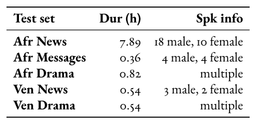
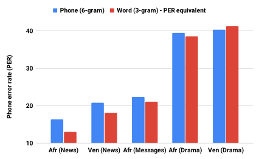

RAIL 2021Tafsiri ya mashine
Kuchunguza uwezekano wa kukusanya taarifa za hotuba ili kukuza rasilimali za lugha za Afrika Kusini
Tafsiri ya mashine, haijakaguliwa na binadamu. Makala asili ndiyo toleo la rejeo; sentensi zilizopigiwa mstari ni zile ambazo ukaguzi wa kiotomatiki haukuwa na uhakika nazo.
Proceedings of the 2nd Workshop on Resources for African Indigenous Languages (RAIL 2021), Journal of the Digital Humanities Association of Southern Africa.
Tafsiri ya Ernst van Gassen (Arktos AI Lab), yenye leseni CC BY-SA 4.0 kama makala asili. Matumizi tena yanaruhusiwa kwa kutaja mwandishi; shiriki marekebisho kwa masharti yale yale. Waandishi asili hawajakagua wala kuidhinisha tafsiri hii.
Maandishi matupu ya kutumia tena, pamoja na leseni yake: Kiswahili · LESENI
Taasisi
Badenhorst, Jaco
Voice Computing Research Group, CSIR Next Generation Enterprises and Institutions Cluster, Pretoria, South Africa
de Wet, Febe
Department of Electrical and Electronic Engineering, Stellenbosch University, South Africa
Anwani za barua pepe zimeondolewa kwa sababu za faragha. Zinapatikana katika PDF asilia.
Muhtasari
Data ya kutosha ya lugha ya lengo inabaki kuwa kipaumbele muhimu katika maendeleo ya mifumo ya utambuzi wa sauti wa kiotomatiki (ASR). Kwa mfano, uboreshaji mkubwa katika uundaji wa kielelezo cha akustika ambao usanifu wa kina umefanikiwa kuufikia hivi karibuni kwa lugha zenye rasilimali nyingi unahitaji kiasi kikubwa cha data ya usemi. Zaidi ya hayo, vielelezo vya akustika katika mifumo ya kisasa ya ASR ambavyo vinajumlisha vizuri katika vikoa tofauti kwa kawaida hufunzwa kwa kutumia korasi mbalimbali, si moja au mbili tu. Korasi mbalimbali zenye mamia ya saa za data ya usemi hazipatikani kwa lugha zenye rasilimali chache. Katika karatasi hii, tunachunguza uwezekano wa kuunda rasilimali za ziada za usemi kwa lugha rasmi za Afrika Kusini kwa kutumia utaratibu wa uvunaji wa data nusu-otomatiki. Mitandao ya neuroni ya muda wa kuchelewa ilitumika kuzalisha maandishi ya kiwango cha simu ya data ya mazungumzo yaliyokusanywa kutoka maeneo tofauti.
Maneno Muhimu
lugha zenye rasilimali chache, uvunaji wa data, utambuzi wa usemi wa kiotomatiki, TDNN-F, urekebishaji wa kikoa
1 Utangulizi
Angalau lugha rasmi 10 za Afrika Kusini kwa sasa zinachukuliwa kuwa na uhaba wa rasilimali. Njia mpya za kupanua kwa haraka rasilimali zinazohitajika kwa ajili ya utengenezaji wa ASR zinahitajika ili kufungua uwezo kamili wa kutumia mbinu za kisasa za uundaji modeli kwa lugha hizi. Matangazo ya redio yanawakilisha chanzo kimoja kama hicho cha data ya usemi kisicho na kikomo, ambacho nchini Afrika Kusini bado kwa kiasi kikubwa hakijatumika. Matangazo kwa kawaida huwa na aina mbalimbali za data, ikiwa ni pamoja na hotuba zinazotolewa na wasemaji tofauti katika mitindo mbalimbali ya kuzungumza lakini pia matukio mengi yasiyo ya hotuba. Kwa sababu hii, mradi wa ukusanyaji data ulianzishwa hivi karibuni kwa ushirikiano na Kituo cha Afrika Kusini cha Rasilimali za Lugha za Kidijitali[1] ili kukusanya, kusimamia na kuunda korasi mpya za data ya usemi kutoka kwa data ya matangazo.
Ukusanyaji wa data ya usemi ungeweza kuendeshwa kiotomatiki ikiwa mifumo ya unukuzi wa kiotomatiki ingekuwepo. Hata hivyo, kiwango cha maendeleo ya teknolojia ya ASR nchini Afrika Kusini bado lina njia ndefu ya kwenda kabla ya kuwa chaguo linalowezekana kwa ajili ya uvunaji wa data nchini. Kama hatua ya kwanza kuelekea ufafanuzi wa kiotomatiki, modeli za awali za akustika za kuanzisha kazi ya ukusanyaji zilitokana na korasi iliyopo, ingawa ni ndogo, ya NCHLT Speech corpus (Barnard et al. 2014). Uwezo wa kutumia seti hii ya data kufunza mifano ya sauti inayotegemea mtandao wa neva wa kina ulichunguzwa katika utafiti uliopita ambapo mifumo ya msingi kwa lugha zote 11 rasmi ilitekelezwa kwa kutumia mtandao wa neva wa muda uliogawanywa (TDNN-F) (Badenhorst & de Wet 2019). Makala hii baadaye inaripoti juu ya marekebisho ya mifano hii kwa kutumia data za mazungumzo zilizokusanywa ili kuboresha ubora wa mfumo wa uandishi. Lengo ni kuimarisha uwezo wa mfumo wa kunukuu kiotomatiki usemi kutoka nyanja mbalimbali.
Katika utafiti wa hivi karibuni, Szaszáak & Pierucci (2019) walichunguza njia kadhaa za kurekebisha mifano ya akustiki inayotegemea TDNN ya Kiingereza ili iendane na Kiingereza chenye lahaja ya Uhindi. Walijaribu mikakati tofauti ikiwa ni pamoja na majaribio ya kutumia Ujifunzaji hamishi, kufunza upya kwa urahisi mtandao mzima kwa epoka chache na kutumia urekebishaji wa i-vector katika Kaldi (Povey et al. 2011). Mbali na mtindo wa kuzungumza, tofauti nyingine kati ya data ya mafunzo iliyopo na mifano mipya ya usemi iliyopatikana ni muhimu kuzingatia. Kuhusu urekebishaji wa i-vector, kwa mfano, Vaněk et al. (2019) waligundua kuwa mfano mpya wa simu wa Kicheki uliofunzwa kwa kutumia maneno mafupi yaliyogawanyika ulisababisha utambuzi duni wa maneno marefu zaidi ya simu halisi za kituo cha simu. Uchambuzi zaidi ulifunua makadirio ya takwimu za i-vector na mifano ya TDNN kuwa yasiyo sahihi, na kusababisha kushindwa kwa marekebisho. Kinyume chake, urekebishaji wa i-vector pamoja na mbinu za mabadiliko ya data umethibitishwa kuwa njia yenye ufanisi ya kuboresha mifano ya akustiki inayotegemea TDNN kwa lugha zenye rasilimali ndogo (Kumar & Aggarwal 2020).
Sehemu ya 2 ya karatasi hii inaelezea mchakato wa kukusanya data na changamoto zake zinazohusiana. Sehemu ya 2.1 inaeleza jinsi data mpya zilivyochaguliwa ikifuatiwa na maelezo ya seti za data za majaribio zilizofafanuliwa kwa ajili ya tathmini ya mfumo katika Sehemu ya 3. Lugha mbili kati ya lugha rasmi 11 zilijumuishwa katika uchunguzi wetu: Afrikaans (Afr) na Tshivenda (Ven). Sehemu ya 4 inatoa mipangilio muhimu ya mifumo iliyoboreshwa ya uandishi, wakati Sehemu ya 5 inaelezea taratibu za kutoa sehemu fupi za hotuba kutoka kwa data ya awali. Sehemu ya 6 inatoa matokeo kwa mipangilio tofauti ya mfumo. Majadiliano kuhusu matokeo (Sehemu ya 7) na hitimisho linalofuata (Sehemu ya 8), yanahitimisha makala.
2 Ukusanyaji wa Data
Hapo awali, ilitarajiwa kwamba data za utangazaji kutoka vituo mbalimbali vya redio zingetiririshwa kwa seva. Hata hivyo, wakati wa mchakato wa kutambua vyanzo vinavyowezekana vya data, chaguzi nyingine pia ziliibuka. Kwa mfano, baadhi ya vituo vya redio vilijitolea kutoa nakala halisi za maudhui yao huku vingine vikiwa tayari kuhamisha data kupitia kiungo maalum. Uwezekano mwingine uliotambuliwa ulikuwa kuhamisha data kutoka kwa huduma ya mwenyeji wa maudhui. Maelezo mafupi ya hali hizi tatu za kukamata data ni kama ifuatavyo:
- Kutiririsha data kutoka wingu hadi hifadhi ya ndani
- Kuhamisha data kutoka kwa wakandarasi binafsi
- Kuhamisha data kutoka huduma ya upangishaji.
Kwa kuongezea, seti mbalimbali za data za utangazaji zingeweza kupatikana kutoka kwa kila hali ya kunasa data. Kwa mfano, baadhi ya matangazo huwa na taarifa za habari zilizoandikwa kwa usahihi zenye ubora wa juu wa sauti, lakini kwa idadi ndogo tu ya wasomaji wa habari. Matangazo ya habari yaliyoandikwa yalipatikana tu chini ya hali ya kukamata data 2. Pia kuna kiasi kikubwa zaidi cha data ya sauti isiyoandikwa inayopatikana. Huduma za upangishaji za Afrika Kusini hutoa podikasti nyingi za vipindi vya redio katika lugha zote. Ukusanyaji wa matangazo kutoka kwa wakandarasi binafsi uliathiriwa vikali na janga la Covid-19. Shughuli katika vituo vidogo vya redio zilipungua kwa kuwa vituo hivyo vilikabili magumu mengi mapya. Kituo kimoja chenye makao yake chuo kikuu kililazimika hata kujiondoa kwenye mradi. Kukubaliana juu ya mikataba ya kushiriki data pia kulikuwa mchakato wa polepole sana na unaotumia muda mwingi.
Kwa bahati nzuri, ushirikiano na Iono[2] ulifanikiwa. Makubaliano yaliweza kufikiwa na vituo vichache vya redio vinavyozalisha na kusambaza podikasti kwenye jukwaa la mtandaoni la sauti la Iono. Kwa matokeo hayo, rasilimali zilizokusanywa kwa lugha mbili zilizochunguzwa katika utafiti huu ziliweza kupatikana tu chini ya hali 1 na 3.
2.1 Uchaguzi wa maudhui
Kuhusu rasilimali za usemi zinazopatikana kwa lugha za Afrika Kusini, Afr iko katika nafasi nzuri kidogo kuliko baadhi ya lugha nyingine. Ilijumuishwa katika utafiti ili kuendeleza mkakati wa uvunaji na kutoa mtazamo mpana zaidi juu ya uwezekano tofauti, kutokana na aina kubwa ya podikasti. Ven ilichaguliwa kama mfano wa lugha yenye vikwazo vikubwa vya rasilimali. Podikasti zilikuwa chache zaidi na hakukuwa na data za habari za utangazaji zilizokusanywa hapo awali kama ilivyokuwa kwa Afr. Nyenzo ambazo data zilichaguliwa kwa ajili ya uvunaji zilijumuisha mitindo mitatu ya usemaji: usemi wa kusoma (k.m. taarifa za habari), usemi wa mazungumzo (k.m. tamthilia za redio), na hotuba za studio (ujumbe wa mzungumzaji mmoja unaotolewa studio).
Vipengele vilivyozingatiwa kuchagua matangazo kwa ajili ya kuvuna ni pamoja na upatikanaji, mtindo wa kuzungumza na kuwepo au kutokuwepo kwa matukio yasiyo ya hotuba kama vile muziki, matangazo, nk. Pia tulijaribu kupunguza tofauti za kiusikika kati ya data zitakazovunwa na data za NCHLT ambazo modeli za awali za akustika zilitokana nazo. Data za NCHLT zilijumuisha vidokezo vya usemi wa kusoma vilivyo wazi, vyenye kelele ndogo za chinichini. Kwa hiyo, data za usemi wa kusoma kama vile habari au hotuba za studio zilizingatiwa kwanza.
Kwa Afr, data za kutosha zilipatikana kwa hotuba zenye ubora wa studio. Kipindi kimoja cha redio kilikuwa na zaidi ya saa 85 za rekodi zilizo wazi, mzungumzaji mmoja kwa kila kipindi na idadi kubwa ya kutosha ya wazungumzaji katika vipindi vyote. Meta-data ya msemaji pia ilikuwa inapatikana kwa ajili ya vipindi. Muhimu zaidi, podcast za shou hii hazikuwa zikiwa na jingles za kuanza au kumaliza, na muda wa kipindi ulikuwa chini ya dakika tano, jambo ambalo linaupunguza sana hitaji ya usindikaji wa awali na ugawaji. Data iliwakilisha mtindo mpya wa kuzungumza wa hotuba ya wazi, ambayo mtangazaji aliwasilisha kwa njia ya mazungumzo. Data kutoka shoo hii ya redio kwa hiyo iliachwa kuwa inafaa kwa majaribio ya bootstrapping ya NCHLT.
Kwa bahati mbaya, hakunaonyesho la ubora wa sauti uliolingana ulioweza kutambuliwa kwa Ven. Kwa hiyo, seti ya ripoti za habari 1 118 za Ven ambazo zilirekodiwa kutoka redio inayotolewa mtandaoni ilichaguliwa kamaulingano bora zaidi uliopo kwa data ya NCHLT. Kila rekodi ilijumuisha taarifa ya habari ya takriban dakika tano, ambayo inatafsiri karibu masaa 90 ya data. Sauti hiyo pia ilitia ndani viraka vya waandishi wa habari na kengele za habari.
3 Data ya majaribio
Takwimu za kiwakilishi za majaribio zilihitajika kutathmini utendaji wa mifumo ya uandishi wa msingi pamoja na athari za kubadilisha mfano wa sauti ili kuboresha uvunaji wa data kwa Afr na Ven. Kwa hiyo seti za mtihani zilichaguliwa kutokana na data zilizopo, kuhakikisha kwamba hali za sauti na mitindo ya kuzungumza ambayo ilitokea katika data iliyochaguliwa kwa ajili ya kuvuna pia iliwakilishwa katika data ya mtihani. Mbali na seti ya majaribio ya Afr News iliyokuwepo, seti nne za majaribio ziliandikwa kwa mikono: Ven News, Afr Messages pamoja na Ven na Afr Drama. Vipindi vya drama vilijumuishwa kwa sababu vinajumuisha hotuba zilizotolewa na wasemaji wengi, hasa kwa mtindo wa mazungumzo na katika hali mbalimbali za akustiki. Muda katika saa na usambazaji wa wasemaji kwa kila seti ya data ya majaribio umetolewa katika Jedwali 1.
Jedwali 1: Muda na taarifa za mzungumzaji za data ya majaribio

4 Uboreshaji wa mfumo
Mifumo ya unukuzi iliyoboreshwa iliundwa ili kuwezesha unukuzi wa kiotomatiki wa maudhui yaliyochaguliwa yaliyotambulishwa katika Sehemu ya 2.1. Katika makala haya, tunaripoti matokeo kwa aina tatu zifuatazo za mifumo: 1) Msingi, 2) Uboreshaji unaotegemea maandishi na 3) Mifumo iliyorekebishwa kwa kutumia sauti. Mifumo ya msingi ilitumia miundo ya awali ya NCHLT TDNN-F (Badenhorst & de Wet 2019) pamoja na muundo wa lugha tambarare wa ARPA unaojumuisha uni-gramu za fonimu zenye uwezekano sawa. Mifumo iliyoboreshwa kwa msingi wa maandishi ilitumia uundaji wa modeli ya lugha kutokana na korasi ndogo za maandishi zinazopatikana katika lugha hizo na mifumo iliyorekebishwa kiakustika ilijengwa kwa kusasisha modeli za kiakustika ndani ya mipangilio iliyotajwa hapo juu kwa kutumia data iliyonakiliwa kiotomatiki. Zana ya Kaldi ilitumika kuunda miundo yote ya kiakustika iliyotumika katika utafiti huu. Pia, ilitumiwa kutengeneza pingili na vifaa vya kukuza sauti.
4.1 Uboreshaji unaotegemea maandishi
Ili kusanidi mifumo ya unukuzi iliyoboreshwa kwa msingi wa maandishi, modeli za lugha zilijengwa kutoka kwa idadi ya korasi za maandishi zilizozalishwa wakati wa miradi mbalimbali ya awali kwa lugha zote 11. Kutumia maandishi haya katika maendeleo ya mfumo hakikisha kwamba mifumo iliyotengenezwa kwa lugha tofauti ingekuwa inalinganishwa, kwa sababu aina zile zile za maandishi zinapatikana katika kila lugha. Maombi ya TTS yaliyotoka kwenye miradi ya CSIR Lwazi yalionekana kuwa na faida zaidi katika kusanidi mifumo ya msingi ya transkripsheni. Michanganyiko iliyofuata ya vidokezo vya TTS na maandishi kutoka miradi ya CSIR NCHLT Speech[3], CTexT NCHLT Text (Puttkammer et al. 2014a,b), na CTexT Autshumato (McKellar & Puttkammer 2020, Groenewald & du Plooy 2010) pia ilitathminiwa. Jedwali 2 linaonyesha idadi ya alama za maneno yasiyorudiwa (N=1) kwa kila maandishi katika Afr na Ven. Kwa kuongezea, hesabu za 2-gramu za neno (N=2) hutoa mtazamo fulani juu ya mfuatano wa maneno na jumla ya idadi ya tokeni (T) katika kila ripoti ya maandishi juu ya ukubwa wa korasi.
Thamani katika Jedwali la 2 zinaonyesha kwamba korasi ya maandishi ya Afr Lwazi TTS ina maneno zaidi ya kipekee (12 447) kuliko maelezo ya data ya NCHLT Speech. Jedwali pia linaonyesha kwamba ukubwa wa msamiati kwa korasi ya maandishi ya NCHLT Text ni karibu mara nne ya ule wa korasi ya maandishi ya Lwazi TTS. Ingawa sehemu ya Afr ya mkusanyiko wa maandishi sambamba wa Autshumato ina idadi sawa ya maneno na mkusanyiko wa maandishi wa NCHLT, ukubwa wa msamiati wake ni mdogo kwa kiasi kikubwa (maneno 30 440 ya kipekee).
Kinyume chake, mkusanyiko wa maandishi wa Ven Lwazi TTS ulikuwa na maneno 3 488 tu ya kipekee, maneno machache kuliko maelezo ya data ya usemi ya NCHLT. Ingawa mkusanyiko wa maandishi wa NCHLT ulikuwa na msamiati zaidi ya mara saba ya maandishi ya Lwazi TTS, ikilinganishwa na sehemu ya Afr, ukubwa wa msamiati ulikuwa karibu nusu ya idadi ya maneno ya kipekee katika Afr. Jumla ya idadi ya maneno ya mkusanyiko wa maandishi wa Ven NCHLT ilikuwa takriban milioni 1. Hata hivyo, maandishi makubwa zaidi yanaweza kujumuisha maneno zaidi ya nje ya lugha kuliko rasilimali ndogo za maandishi za TTS zilizoratibiwa. Majina sahihi na istilahi za Kiingereza zinazotokea katika maandishi ya NCHLT Ven zinaweza kuchangia ukubwa mkubwa wa msamiati.
Mifumo ya ASR yenye msamiati unaotokana na maandishi machache haiwezi kutabiri maneno ya nje ya msamiati (OOV) katika data ya majaribio. Ili kuelewa vizuri zaidi athari za maneno ya OOV kwenye matokeo ya mfumo uliorahisishwa kulingana na maandishi, Jedwali 3 linafupisha viwango vya OOV kwa TTS, NCHLT Speech, NCHLT Text pamoja na mchanganyiko wa maandishi ya NCHLT Text na TTS (Txt Corp + TTS). Ni wazi kwamba kutabiri data ya habari kwa kutumia maandishi finyu ya TTS (hasa katika kisa cha Ven) kungejumuisha makosa zaidi kutokana na kiwango kikubwa zaidi cha OOV cha seti hizi za data. Thamani zinaonyesha maneno machache sana ya OOV kwa korasi kubwa zaidi ya Maandishi ya NCHLT. Zaidi ya hayo, msamiati wa maandishi haya unazalisha viwango vya chini sawa vya OOV kwa seti zote mbili za data za majaribio za habari na drama.
4.2 Uboreshaji wa sauti
Mitindo tofauti ya kuzungumza katika data ya utangazaji inahitaji uboreshaji wa mifano ya akustika. Katika kazi hii, mbinu ya urekebishaji ilitegemea kufunza upya mfano wa awali wa NCHLT, lakini kuweka i-vekta za NCHLT bila kubadilika. Hii ilimaanisha kwamba i-vectors kwa ajili ya data ya marekebisho pia zilizalishwa kwa kutumia NCHLT i-vector extractor.
Njia hiyo ilijumuisha mpango wa kurekebisha mfano wa TDNN-F wenye hatua mbili. Kwa data ya kurekebisha, tulitumia transcriptions za kiotomatiki za mifumo iliyorekebishwa kulingana na maandishi ya 6-gram iliyotengenezwa kwa data mpya. Hatua ya kwanza ya mapishi ya urekebishaji ilizalisha upya mpangilio wa mafunzo wa modeli ya awali, lakini badala ya kukamilisha mchakato iliacha mpangilio wa mafunzo katika hali ambayo hatua ya pili ya mafunzo ingeweza kutumika. Hatua ya pili kwa hiyo ni hatua ya urekebishaji, ikifunza upya modeli ya kawaida (ya epoka nne) kwa epoka ya ziada, sasa kwa kutumia data ya urekebishaji. Ili kuwezesha mafunzo ya modeli na uchimbaji wa sifa wa kawaida, upatanishi wa trifoni na uvurugaji wa data ulitumika kwa data zote za NCHLT na za urekebishaji. Modeli za awali za NCHLT zilitumika kufanya upatanishi wa trifoni.
Kwa kufanya mafunzo tena, ukali wa mafunzo ya kufaa uliudhibitiwa, kwa kurekebisha kiwango cha kujifunza kwa mizunguko ya mafunzo ya epoki ya mwisho na si idadi ya mizunguko (au mafunzo kwa epoki nyingi zaidi). Kimsingi, vizingiti vya kawaida vya kiwango cha ujifunzaji vya mwanzo na mwisho vya mapishi ya TDNN-F katika epoka nne za awali za mafunzo viliachwa kwenye mpangilio uleule, vikiwekea kanuni ya mafunzo mipaka hiyo. Kwa mafunzo ya epoka ya mwisho, vizingiti sawa na kizingiti cha chini cha mafunzo (0.000020 na 0.000015 mtawalia) vilitumika. Hii ilizuia algoriti kutumia kiwango cha ujifunzaji kilicho karibu na mpangilio wa chini kwa marudio yaliyosalia ya mafunzo.
Jedwali la 2: Ulinganisho wa ukubwa wa msamiati kwa vyanzo vya data za maandishi

Jedwali la 3: Viwango vya maneno nje ya msamiati (kama asilimia) vya maandishi tofauti kutokana na data ya majaribio

5 Uchimbaji wa data
Kama ilivyosemwa katika Sehemu ya 2.1, uvunaji wa data kwa kawaida unahitaji ugawaji wa sauti. Mifumo ya ASR huzoezwa kwa sehemu fupi za usemi, bila kutaja matukio yasiyo ya kawaida kama vile porojo na muziki. Katika utafiti huu, mbinu mbili tofauti za kugawanya zilitumika. Iliyokuwa ya kwanza, mbinu inayotegemea diarisation ya mzungumzaji, iliruhusu ugunduzi wa kiotomatiki wa mwanzo wa habari ndani ya rekodi za Ven za dakika 10. Mbinu ya pili ya utambuzi wa kimya inayotegemea upatanishaji wa Kaldi ilitumika kwa data zote za mavuno za Afr na Ven. Ugawaji wa kutosha uliwezekana kwa lebo za kimya zilizotambuliwa zenye muda wa sekunde 0.1 au zaidi. Vipande vilivyotengenezwa vilikuwa na muda kati ya sekunde 5 na 15.
5.1 Ugawaji
Ili kutambua mwanzo wa habari (baada ya sauti ya habari), tulitumia algoriti ya heuristiki. Heuristiki iliyotumika ilitumia utekelezaji usio na usimamizi wa kutambua wasemaji, kama ilivyotekelezwa katika maktaba ya Python ya chanzo wazi kwa uchambuzi wa ishara za sauti (Giannakopoulos 2015). Kutumia utambuzi wa wasemaji kwenye kurekodi kila moja na kuweka idadi iliyobainishwa awali ya makundi kuwa na lebo za wasemaji watatu na wanne, mtawalia, ilisababisha makundi yanayoweza kutengwa. Thamani nyingine za vigezo zilizochaguliwa za heuristic zilifahamishwa na uchambuzi mfupi uliofanywa hapo awali kwenye sehemu za seti ya majaribio ya habari za Ven zilizogawanywa kwa mikono. Kama ilivyotangazwa kwenye Jedwali 1, vipengele vya msomaji wa Habari za Ven vilikuwa na muda wa jumla wa takriban dakika 33 na wastani na wastani wa muda wa vipengele ulikuwa takriban sekunde 38. Hilo lilimaanisha kwamba sehemu ya kawaida ya magazeti ya habari yaweza kuwa karibu sekunde 40 au zaidi. Baadaye, vitambulisho vya makundi ya wasemaji wa kurekodi mpya vilithibitishwa ili kuangalia kama sehemu hizo ndefu ziligunduliwa ndani ya sekunde 120 za kwanza za kila kurekodi. Kwa 44% ya kurekodi, hakukuwa na ugunduzi wowote, kwa hivyo muda wa chini wa kipengele ulipunguzwa hadi sekunde 20 badala yake. Hii ilipunguza zaidi kiwango cha kutokugundua hadi 12% ya kurekodi. Kwa kuzingatia matokeo haya, hatua zifuatazo za heuristiki ziliendeshwa kuchagua kipengele cha kwanza cha habari mwanzoni mwa kurekodi:
- Chagua tu sehemu zinazoanza angalau sekunde mbili baada ya kuanza kwa rekodi, kwa kuwa ukaguzi ulibaini kuwa sehemu ndefu zinazoanza katika muda wa sekunde sifuri kwa kawaida zilikuwa na muziki.
- Chagua tu sehemu zenye muda wa chini wa sekunde 25.
- Kokotoa mwingiliano wa muda kati ya sehemu zilizoundwa na diarisation ya lebo za wasemaji watatu na wanne kwa sekunde 180 za kwanza za sauti.
- Kwa sehemu zozote zinazopishana zilizotambuliwa wakati wa Hatua ya 3, weka muda wa kuanza kuwa ule wa sehemu ya kwanza yenye mwingiliano wa 50% au zaidi.
- Kata faili za sauti ili kila faili ianze katika muda wa kuanza uliosasishwa.
Kutumia hatua zilizo hapo juu kulihakikisha kwamba kwa 90% ya rekodi nyakati za kuanza kwa habari zinaweza kutambuliwa. Uchunguzi wa eneo ulithibitisha kuwa habari za kuaminika zinaanza.
5.2 Sehemu uteuzi
Rekodi kamili za taarifa za Ven zilijumuisha vipande vya habari, ambavyo baadhi yake vilikuwa na Kiingereza au lugha nyingine. Zaidi ya hayo, baadhi au sehemu ya milio ya habari inaweza kujumuishwa katika sehemu kwa kuwa habari hazikuanza tu, bali pia zilimalizika kwa mlio na muziki. Mbali na mambo hayo, nakala za kwanza za pingili zinatia ndani makosa ya kubandika majina. Kwa hakika, utafiti wa awali uliosababisha uundaji wa modeli ya awali ya kiakustika ya Kiafrikana uliangazia umuhimu wa uteuzi wa kiakustika kwa data ya mafunzo ya usemi isiyo kamili, kwa kutumia alama za programu ya kidinamiki inayotegemea fonimu (PDP). Kwa hiyo, majaribio ya urekebishaji yaliyofanywa katika utafiti huu yalifanywa kwa kujumuisha kwanza sehemu hizo za sauti zilizoonyesha alama bora za PDP kutokana na vikoa vipya vya utangazaji. Ili kufanikisha hili, uteuzi wa sehemu ndogo ya data ya marekebisho ulifanyika. Mbinu ya ufundi wa PDP huhitaji nakala mbili za sehemu ileile ya sauti. Nukuu moja kwa kawaida hutolewa na utambuzi huru wa fonimu (kwa kutumia modeli ya lugha inayotegemea kabisa mfuatano wa lebo za fonimu). Nukuu ya pili inatoka kwa mfumo bora zaidi, ulioboreshwa zaidi wa utambuzi.
Ili kuunda korasi mpya za usemi kutoka kwa data iliyochaguliwa (Sehemu ya 2.1), mifumo bora ya unukuzi kiotomatiki ilitumika kunukuu kila sehemu ya sauti itakayokusanywa. Kwa kila sehemu, kura ya mwisho ya chama cha PDP ilikadiriwa pia. Katika utafiti huu, mifumo iliyoboreshwa ya mwisho wakati mwingine ilitegemea utambuzi wa neno (angalia Kielelezo 2) wakati wowote viwango vya chini vya makosa vingeweza kupatikana kwa njia hii.
Jedwali 4: Viwango vya makosa ya mifumo ya msingi na iliyoboreshwa ya maandishi

6 Matokeo
Ili kujaribu utendaji wa uandishi, kila moja ya seti za data za majaribili ziliandikwa na mifumo ya uandishi iliyoelezwa katika Sehemu 4.1. Viwango vya makosa ya fonimu vilivyofuata (PERs) vilihesabiwa vikijumuisha tu lebo za fonimu za usemi wakati wa ukadiriaji. Jedwali 4 inaonyesha utendaji uliopatikana kwa ajili ya aina mbili za mifumo: 1) unukuzi wa muundo wa lugha wa ARPA unaotegemea fonimu tambarare na 2) mifumo inayotumia miundo ya lugha ya ARPA yenye n-gramu 6 inayotegemea fonimu kutokana na data ya maandishi. Katika mkakati wa kurudia, mifumo tofauti inayotegemea ARPA ilijengwa kwa mchanganyiko wa data ya maandishi. Thamani za PER katika Jedwali 4 zinaakisi mifumo bora ya 6-gram pamoja na modeli za sauti za NCHLT. Mifumo bora tu ya maandishi ya 6-gram iliyorekebishwa katika kila lugha ilichaguliwa. Hii ilimaanisha kwamba mfano wa lugha ya gramu 6 ulitokana na maandishi ya TTS kwa mifumo ya Afr na kutoka kwa mchanganyiko wa TTS na NCHLT Text corpus katika kesi ya Ven.
Kwa kutumia mifano ya lugha ya 6-gram, mifumo ilizalisha PERs chini sana kwa seti zote za data za majaribio za Afr na Ven. Vivyo hivyo, matokeo ya mchanganyiko wa TTS na korasi ya maandishi ya NCHLT yanawasilishwa kwa Ven. Matokeo yanaonyesha PER za juu zaidi (zaidi ya 40%) kwa data ya Drama ikilinganishwa na data ya News. Katika kesi yoyote, mifumo ya ARPA ya 6-gram hutoa uboreshaji ikilinganishwa na kutumia tu mfumo wa transkripsheni wa ARPA usio na mstari.

Kielelezo 1: PER za Ven kwenye data ya drama kwa maandishi mbalimbali na ukubwa wa muktadha
Ukubwa wa muktadha wa gramu 6 wa modeli za lugha ulichaguliwa kama kiwango ambapo viwango vya chini vya PER vinaweza kufikiwa katika lugha zote mbili kwa TTS na seti kubwa zaidi za data ya maandishi. Kielelezo 1 kinaonyesha mfano wa uchambuzi kama huo. Viwango vya chini vya makosa vilipimwa kadiri ukubwa wa muktadha wa modeli za lugha za n-gramu ulivyoongezeka hadi kufikia kiwango cha takriban miktadha ya fonimu ya gramu 6 au 7. Isipokuwa kwa maandishi ya NCHLT Speech, ugunduzi huu ulijumlishwa vizuri kwa michanganyiko mbalimbali ya maandishi.

Kielelezo cha 2: Kulinganisha viwango sawia vya PER kwa mifumo ya utambuzi wa fonimu na neno
Kwa kuvutia, PER za chini hata zaidi zinaweza kupatikana kwa seti nyingi za majaribio wakati utambuzi wa neno unapotumika kwanza. Kwa kutumia mifano ya lugha ya 3-gram, transcriptions za kiwango cha maneno zilizotolewa kiotomatiki zilibadilishwa kuwa lebo za phone kwa kutumia kamusi ya matamshi. Kutokana na mpangilio katika Kielelezo 2 inaonekana kwamba maandishi ya simu kwa seti za mtihani zenye viwango bora vya maandishi, kama vile zile za data ya Habari na Ujumbe, zilinufaika zaidi kutokana na kutambuliwa katika kiwango cha neno. Tu kwa data za majaribio za Ven Drama zenye PER ya zaidi ya 40% utambuzi wa neno haukuwa na faida.
Jedwali la 5: Kulinganisha PER kati ya msingi wa NCHLT na mifano iliyofunzwa kwa kubadilika kwenye vipindi vya Afr Messages.

Baadaye, marudio ya kwanza ya uboreshaji wa akustika yalitumika kutathmini manufaa yanayowezekana ya urekebishaji wa mfano wa akustika. Jedwali la 5 linaonyesha athari ambayo matumizi ya mifano ya akustika iliyorekebishwa pamoja na mifano ya lugha ya fonimu yalikuwa nayo kwenye utambuzi. Katika jaribio hili, karibu seti nzima ya data ya Afr Messages (masaa 71, ukiondoa data ya majaribio) ilitumika kama data ya urekebishaji, ikichukulia kila kipindi cha dakika 3 kama sehemu moja ya sauti. Kwa uwazi, PERs zilipunguzwa zaidi kwa data ya mtihani wa Afr Messages kutoka kwa mtindo huo huo wa kuzungumza. Matokeo haya yalilinganishwa vyema na yale yaliyozalishwa pia kwa kutumia takriban masaa 18 ya data ya urekebishaji, ikiwa alama za PDP zilitumika kuchagua sehemu fupi za data iliyonakiliwa vizuri kutoka seti kubwa kwa mafunzo ya kubadilika kwanza.
7 Mjadala
Miundo ya lugha iliyojengwa kutoka msamiati wa korasi kubwa na mchanganyiko wa maandishi ilizalisha viwango vya chini kiasi vya OOV. Maadili katika Jedwali 3 yalionyesha kuwa viwango vya OOV vya chini ya 10% katika seti za data za mtihani zinazowakilisha mitindo tofauti ya kuzungumza kutoka kwa vyanzo tofauti (habari, ujumbe wa studio na vipindi vya tamthilia) vinaweza kupatikana. Ingawa ukweli huu unaweza kuonekana kuwa wa kuahidi kwa upande wa ufunikaji wa msamiati, PER zinazotumia miundo hii ya lugha hazikuonyesha upunguzaji huo muhimu wakati wa kutumia maandishi makubwa zaidi. Badala yake, PERs chache sana zingeweza kupatikana kwa kutumia mifano ya lugha ya simu yenye ufikivu wa simu wa kutosha, kama vile mifano inayotegemea maombi ya TTS yaliyosawazishwa kwa fonetiki pekee. Maboresho madogo tu yalionekana kwa Ven ambapo ukubwa wa maandishi ya maelekezo ya TTS ulikuwa mdogo sana kuliko ule wa Afr. Uchambuzi katika Kielelezo 1, ambapo maandishi ya drama ya Ven yalichambuliwa unatoa mfano. Inarekodi tofauti ya PER ya chini ya 1% kwa kutumia maandishi ya ziada zaidi ya maandishi ya TTS. Kwa hiyo, kutia ndani msamiati zaidi wa maandishi mengine (badala ya yale ambayo tayari yametiwa ndani) huenda yasinufaishe ujenzi wa mifumo ya simu iliyojengwa kwa vifaa vya kukuza sauti kama ilivyofikiriwa kwanza. Kunukuu seti za majaribio za mtindo wa usemaji wa mazungumzo kulizalisha makosa mengi zaidi kuliko data ya majaribio ya kusoma habari. Kwa uvunaji wa data unaoendelea, kosa la juu kiasi linapendekeza kwamba maendeleo zaidi ya akustika yanahitajika ili kupunguza PER, kabla ya kujenga mifano ya lugha ya msamiati mkubwa zaidi. Mtazamo mwingine juu ya makosa ya unukuzi unatokana na uchambuzi wa ukubwa wa muktadha wa mifano ya lugha ya fonimu. Miktadha mikubwa ya fonimu ilichukua jukumu muhimu kupunguza PER.
Ilionyeshwa pia kwamba kwa mifano ya lugha ya fonimu yenye muktadha mkubwa, upunguzaji mkubwa zaidi wa PER ulipatikana kwa seti za majaribio ambapo PER za chini zilikuwa zimepatikana hapo awali. Ugunduzi huu unaunga mkono wazo kwamba mifumo ya msamiati mkubwa inahitaji mifano bora (inayolingana vizuri) ya akustika. Kwa msingi, manufaa ya kutia ndani habari za nyenzo za maandishi kwa kutumia lugha katika mifumo ya kunakili huongezeka kadiri mfumo wa kukuza sauti unavyoboreshwa. Majaribio ya awali ya kutambua maneno yalitoa makosa makubwa ya uandishi kwa data ya majaribio. Kama ilivyo kwa lugha zenye rasilimali nyingi, ambapo mifano ya akustika inaweza kuendelezwa kwa data ya kutosha ya sauti, kujumuisha maandishi makubwa zaidi kunapaswa, katika siku zijazo, kutoa mchango mkubwa kufikia utambuzi sahihi zaidi.
Mkakati wa uanukiaji uliotumika ulizalisha kwa mafanikio kupungua kwa PER kwa kiasi kikubwa, ukiwa na uanukiaji wa eneo la data ya lengo ya ujumbe wa studio mpya ya Afr. Wasemaji katika kipindi cha redio kilichochaguliwa walizungumza kwa namna ya mazungumzo zaidi. Maoni kama hayo yalifanywa kuhusiana na lugha ya Ven, ambapo kujipatanisha na eneo la habari pia kulitokeza maendeleo fulani, lakini kama ilivyotarajiwa, mabadiliko hayo hayakuboresha kweli kweli utambuzi wa drama ya Ven. Matokeo haya yalithibitisha uwezo wa mbinu hiyo ya kubadilika kulingana na hali na kutengeneza miundo ya sauti ya TDN-F kwa ajili ya maeneo mapya ya kukuza sauti.
Kwa kushangaza zaidi, urekebishaji huu pia unaweza kufikiwa kwa kutumia chini ya saa 20 za data, kuchagua sehemu za sauti zilizopata alama bora zaidi za PDP. Ingawa inatarajiwa kwamba mbinu hiyo itazalisha matokeo sawa inapotumika kwa data kutoka lugha nyingine, kazi ya baadaye bado inapaswa kulenga mafunzo ya kurudia kwa kutumia manukuu yaliyosasishwa yanayozalishwa. Kwa kuzingatia uwiano usio na usawa wa data ya mafunzo ya NCHLT iliyonakiliwa kwa usahihi dhidi ya sampuli za data za urekebishaji zilizonakiliwa kiotomatiki, ilikuwa muhimu pia kuendelea kutumia i-vectors za NCHLT zilizoundwa na badiliko mahususi kwa msemaji linalohitajika kwa mafunzo ya TDNN-F. Zaidi ya hayo, mkakati huu una faida ya kuwa huru kwa msemaji na hauhitaji lebo za msemaji kwa data ya urekebishaji. Kama sampuli za data za marekebisho zilizoandikwa kwa usahihi zaidi zinapatikana, zinapaswa kubadilishwa ili kujumuisha marekebisho sahihi ya i-vector.
8 Hitimisho
Matokeo ya utafiti huu yanaonyesha kuwa ufanisi wa kujumuisha data ya maandishi kama rasilimali ya lugha wakati wa maendeleo ya mfumo wa uandishi wa kiotomatiki inategemea hali ya mifano ya sauti inayotumika kwa ajili ya kukusanya. Ingawa kujumuisha maandishi yenye uwiano mzuri ndani ya lugha (kama vile seti ya vidokezo vya TTS) ni muhimu, miundo ya akustika inayolingana vizuri na kikoa cha akustika cha data ya usemi itakayovunwa, pia inahitajika. Kujumuisha kiasi kikubwa zaidi cha maandishi kwa ajili ya uundaji wa modeli za lugha basi kunakuwa na ufanisi zaidi. Ingawa mbinu iliyotajwa hapo juu ingezalisha data zaidi, kupunguza makosa ya uandishi ingeongeza mavuno ya data ya mazungumzo iliyoelezwa vizuri. Inapendekezwa kuwa njia mpya za kuboresha maendeleo ya mfano zinapaswa kutafutwa. Urekebishaji bora wa akustika hatimaye unapaswa kuwezekana kwa seti za data za urekebishaji zenye manukuu sahihi ya kutosha.
Matokeo ya utafiti huu yalithibitisha kwamba mbinu ya sasa ya uvunaji wa data ingeweza kutumika kwa lugha zote rasmi za Afrika Kusini. Ujumlishaji mzuri kwa data ya usemi kutoka kikoa kipya, unaojumuisha mtindo mpya wa kuzungumza, ulipatikana kwa Afr. Pili, mbinu hiyo hiyo inaweza kurudiwa kwa mafanikio katika lugha ya Kiven yenye vikwazo vingi zaidi vya rasilimali, ikitoa PER kwenye data ya habari za utangazaji ambazo zilikuwa sawa na PER iliyopatikana kwa data ya Afr kutoka mtindo mpya wa kuzungumza.
Maelezo
- [ 1] https://www.sadilar.org/, SADiLaR imefadhiliwa na Idara ya Sayansi na Innovation (DSI) ya serikali ya Afrika Kusini.
- [2] https://https://iono.fm/ Iono inadumisha jukwaa la sauti mtandaoni linalotoa podikasti na huduma za utiririshaji wa moja kwa moja wa sauti kwa vyanzo mbalimbali.
- [3] Maandishi ya NCHLT Speech yalijumuisha vidokezo vya mafunzo vya ASR.
Shukrani
Kazi ya kuvuna data iliwezeshwa na fedha zilizopokelewa kutoka Idara ya Sayansi na Ubunifu kupitia Kituo cha Afrika Kusini cha Rasilimali za Lugha za Kidigitali (SADiLaR).
Marejeo
Badenhorst, J. & de Wet, F. (2019), 'The usefulness of imperfect speech data for ASR development in low-resource languages', Information 10(9). URL: https://www.mdpi.com/2078-2489/10/9/268
Barnard, E., Davel, M. H., van Heerden, C., de Wet, F. & Badenhorst, J. (2014), The NCHLT speech corpus of the South African languages, in 'in Proc. SLTU', St Petersburg, Russia.
Giannakopoulos, T. (2015), 'pyaudioanalysis: An open-source python library for audio signal analysis', PloS one 10(12).
Groenewald, H. J. & du Plooy, L. (2010), 'Processing parallel text corpora for three South African language pairs in the Autshumato project', AfLaT 2010 p. 27.
Kumar, A. & Aggarwal, R. K. (2020), 'Hindi speech recognition using time delay neural network acoustic modeling with i-vector adaptation', International Journal of Speech Technology pp. 1-12.
McKellar, C. A. & Puttkammer, M. J. (2020), 'Dataset for comparable evaluation of machine translation between 11 south african languages', Data in brief 29, 105146.
Povey, D., Ghoshal, A., Boulianne, G., Burget, L., Glembek, O., Goel, N., Hannemann, M., Motlicek, P., Qian, Y., Schwarz, P. et al. (2011), The Kaldi speech recognition toolkit, in 'IEEE 2011 workshop on Automatic Speech Recognition and Understanding (ASRU)', number EPFL-CONF-192584, Hilton Waikoloa Village, Big Island, Hawaii.
Puttkammer, M., Schlemmer, M., Pienaar, W. & Bekker, R. (2014a), 'NCHLT Afrikaans text corpora'.
Puttkammer, M., Schlemmer, M., Pienaar, W. & Bekker, R. (2014b), 'NCHLT Tshivenda text corpora'.
Szaszáak, G. & Pierucci, P. (2019), A comparative analysis of domain adaptation techniques for recognition of accented speech, in '2019 10th IEEE International Conference on Cognitive Infocommunications (CogInfoCom)', IEEE, pp. 259-264.
Vaněk, J., Michálek, J. & Psutka, J. (2019), Tuning of acoustic modeling and adaptation technique for a real speech recognition task, in 'International Conference on Statistical Language and Speech Processing', Springer, pp. 235-245.
English na Kiswahili
Investigating the feasibility of harvesting broadcast speech data to develop resources for South African languages
Kuchunguza uwezekano wa kukusanya taarifa za hotuba ili kukuza rasilimali za lugha za Afrika Kusini
Affiliations
Badenhorst, Jaco
Voice Computing Research Group, CSIR Next Generation Enterprises and Institutions Cluster, Pretoria, South Africa
de Wet, Febe
Department of Electrical and Electronic Engineering, Stellenbosch University, South Africa
Taasisi
Badenhorst, Jaco
Voice Computing Research Group, CSIR Next Generation Enterprises and Institutions Cluster, Pretoria, South Africa
de Wet, Febe
Department of Electrical and Electronic Engineering, Stellenbosch University, South Africa
Abstract
Muhtasari
Sufficient target language data remains an important factor in the development of automatic speech recognition (ASR) systems. For instance, the substantial improvement in acoustic modelling that deep architectures have recently achieved for well-resourced languages requires vast amounts of speech data. Moreover, the acoustic models in state-of-the-art ASR systems that generalise well across different domains are usually trained on various corpora, not just one or two. Diverse corpora containing hundreds of hours of speech data are not available for resource limited languages. In this paper, we investigate the feasibility of creating additional speech resources for the official languages of South Africa by employing a semi-automatic data harvesting procedure. Factorised time-delay neural network models were used to generate phone-level transcriptions of speech data harvested from different domains.
Data ya kutosha ya lugha ya lengo inabaki kuwa kipaumbele muhimu katika maendeleo ya mifumo ya utambuzi wa sauti wa kiotomatiki (ASR). Kwa mfano, uboreshaji mkubwa katika uundaji wa kielelezo cha akustika ambao usanifu wa kina umefanikiwa kuufikia hivi karibuni kwa lugha zenye rasilimali nyingi unahitaji kiasi kikubwa cha data ya usemi. Zaidi ya hayo, vielelezo vya akustika katika mifumo ya kisasa ya ASR ambavyo vinajumlisha vizuri katika vikoa tofauti kwa kawaida hufunzwa kwa kutumia korasi mbalimbali, si moja au mbili tu. Korasi mbalimbali zenye mamia ya saa za data ya usemi hazipatikani kwa lugha zenye rasilimali chache. Katika karatasi hii, tunachunguza uwezekano wa kuunda rasilimali za ziada za usemi kwa lugha rasmi za Afrika Kusini kwa kutumia utaratibu wa uvunaji wa data nusu-otomatiki. Mitandao ya neuroni ya muda wa kuchelewa ilitumika kuzalisha maandishi ya kiwango cha simu ya data ya mazungumzo yaliyokusanywa kutoka maeneo tofauti.
Keywords
Maneno Muhimu
low-resource languages, data harvesting, automatic speech recognition, TDNN-F, domain adaptation
lugha zenye rasilimali chache, uvunaji wa data, utambuzi wa usemi wa kiotomatiki, TDNN-F, urekebishaji wa kikoa
1 Introduction
1 Utangulizi
At least 10 of South Africa's official languages are currently regarded as resource-constrained. New ways to rapidly expand the resources required for ASR development are needed to unlock the full potential of applying state-of-the-art modelling techniques to these languages. Radio broadcasts represent one such potentially unlimited speech data source, which in South Africa is still largely untapped. Broadcasts typically contain various data types, including speech produced by different speakers in various speaking styles but also many non-speech events. For this reason, a data harvesting project was recently initiated in collaboration with the South African Centre for Digital Language Resources[1] to collect, curate and develop new corpora of speech data from broadcast data.
Angalau lugha rasmi 10 za Afrika Kusini kwa sasa zinachukuliwa kuwa na uhaba wa rasilimali. Njia mpya za kupanua kwa haraka rasilimali zinazohitajika kwa ajili ya utengenezaji wa ASR zinahitajika ili kufungua uwezo kamili wa kutumia mbinu za kisasa za uundaji modeli kwa lugha hizi. Matangazo ya redio yanawakilisha chanzo kimoja kama hicho cha data ya usemi kisicho na kikomo, ambacho nchini Afrika Kusini bado kwa kiasi kikubwa hakijatumika. Matangazo kwa kawaida huwa na aina mbalimbali za data, ikiwa ni pamoja na hotuba zinazotolewa na wasemaji tofauti katika mitindo mbalimbali ya kuzungumza lakini pia matukio mengi yasiyo ya hotuba. Kwa sababu hii, mradi wa ukusanyaji data ulianzishwa hivi karibuni kwa ushirikiano na Kituo cha Afrika Kusini cha Rasilimali za Lugha za Kidijitali[1] ili kukusanya, kusimamia na kuunda korasi mpya za data ya usemi kutoka kwa data ya matangazo.
Speech data harvesting could be automated if automatic transcription systems existed. However, the level of ASR technology development in South Africa still has a long way to go before that would be a feasible option for data harvesting in the country. As a first step toward automatic annotation, initial acoustic models to bootstrap the harvesting work were derived from the existing, though limited, NCHLT Speech corpus (Barnard et al. 2014). The viability of using this data set to train deep neural network-based acoustic models was investigated in a previous study in which baseline systems for all 11 official languages were implemented using factorised time-delay neural networks (TDNN-F) (Badenhorst & de Wet 2019). This paper subsequently reports on the adaptation of these models using harvested speech data to improve the quality of the transcription system. The aim is to enhance the system's ability to automatically transcribe speech from various domains.
Ukusanyaji wa data ya usemi ungeweza kuendeshwa kiotomatiki ikiwa mifumo ya unukuzi wa kiotomatiki ingekuwepo. Hata hivyo, kiwango cha maendeleo ya teknolojia ya ASR nchini Afrika Kusini bado lina njia ndefu ya kwenda kabla ya kuwa chaguo linalowezekana kwa ajili ya uvunaji wa data nchini. Kama hatua ya kwanza kuelekea ufafanuzi wa kiotomatiki, modeli za awali za akustika za kuanzisha kazi ya ukusanyaji zilitokana na korasi iliyopo, ingawa ni ndogo, ya NCHLT Speech corpus (Barnard et al. 2014). Uwezo wa kutumia seti hii ya data kufunza mifano ya sauti inayotegemea mtandao wa neva wa kina ulichunguzwa katika utafiti uliopita ambapo mifumo ya msingi kwa lugha zote 11 rasmi ilitekelezwa kwa kutumia mtandao wa neva wa muda uliogawanywa (TDNN-F) (Badenhorst & de Wet 2019). Makala hii baadaye inaripoti juu ya marekebisho ya mifano hii kwa kutumia data za mazungumzo zilizokusanywa ili kuboresha ubora wa mfumo wa uandishi. Lengo ni kuimarisha uwezo wa mfumo wa kunukuu kiotomatiki usemi kutoka nyanja mbalimbali.
In a recent study Szaszáak & Pierucci (2019) investigated several approaches to adapt English TDNN-based acoustic models to Indian accented English. They tested different strategies including attempts to employ transfer learning, simple re-training of the entire network for a few epochs and applying i-vector adaptation in Kaldi (Povey et al. 2011). Apart from the speaking style, other differences between existing training data and newly obtained speech examples are important to consider. Regarding i-vector adaptation, for example, Vaněk et al. (2019) found that a new Czech telephone model trained on short split utterances resulted in poor recognition of much longer real call centre utterances. Further analysis revealed the estimation of i-vector statistics with the TDNN models to be incorrect, resulting in failed adaptation. Conversely, i-vector adaptation in conjunction with data perturbation techniques have been shown to be an effective approach to improving TDNN-based acoustic models for low-resourced languages (Kumar & Aggarwal 2020).
Katika utafiti wa hivi karibuni, Szaszáak & Pierucci (2019) walichunguza njia kadhaa za kurekebisha mifano ya akustiki inayotegemea TDNN ya Kiingereza ili iendane na Kiingereza chenye lahaja ya Uhindi. Walijaribu mikakati tofauti ikiwa ni pamoja na majaribio ya kutumia Ujifunzaji hamishi, kufunza upya kwa urahisi mtandao mzima kwa epoka chache na kutumia urekebishaji wa i-vector katika Kaldi (Povey et al. 2011). Mbali na mtindo wa kuzungumza, tofauti nyingine kati ya data ya mafunzo iliyopo na mifano mipya ya usemi iliyopatikana ni muhimu kuzingatia. Kuhusu urekebishaji wa i-vector, kwa mfano, Vaněk et al. (2019) waligundua kuwa mfano mpya wa simu wa Kicheki uliofunzwa kwa kutumia maneno mafupi yaliyogawanyika ulisababisha utambuzi duni wa maneno marefu zaidi ya simu halisi za kituo cha simu. Uchambuzi zaidi ulifunua makadirio ya takwimu za i-vector na mifano ya TDNN kuwa yasiyo sahihi, na kusababisha kushindwa kwa marekebisho. Kinyume chake, urekebishaji wa i-vector pamoja na mbinu za mabadiliko ya data umethibitishwa kuwa njia yenye ufanisi ya kuboresha mifano ya akustiki inayotegemea TDNN kwa lugha zenye rasilimali ndogo (Kumar & Aggarwal 2020).
Section 2 of this paper describes the data collection process and its associated challenges. Section 2.1 explains how new data were selected followed by a description of the test data sets that were defined for system evaluation in Section 3. Two of the 11 official languages were included in our investigation: Afrikaans (Afr) and Tshivenda (Ven). Section 4 introduces the important configurations of refined transcription systems, while Section 5 describes procedures to extract shorter segments of speech from raw data. Section 6 provides results for different system configurations. A discussion on the results (Section 7) and subsequent conclusions (Section 8), concludes the paper.
Sehemu ya 2 ya karatasi hii inaelezea mchakato wa kukusanya data na changamoto zake zinazohusiana. Sehemu ya 2.1 inaeleza jinsi data mpya zilivyochaguliwa ikifuatiwa na maelezo ya seti za data za majaribio zilizofafanuliwa kwa ajili ya tathmini ya mfumo katika Sehemu ya 3. Lugha mbili kati ya lugha rasmi 11 zilijumuishwa katika uchunguzi wetu: Afrikaans (Afr) na Tshivenda (Ven). Sehemu ya 4 inatoa mipangilio muhimu ya mifumo iliyoboreshwa ya uandishi, wakati Sehemu ya 5 inaelezea taratibu za kutoa sehemu fupi za hotuba kutoka kwa data ya awali. Sehemu ya 6 inatoa matokeo kwa mipangilio tofauti ya mfumo. Majadiliano kuhusu matokeo (Sehemu ya 7) na hitimisho linalofuata (Sehemu ya 8), yanahitimisha makala.
2 Data collection
2 Ukusanyaji wa Data
Initially, it was anticipated that broadcast data from various radio stations would be streamed to a server. However, during the process of identifying possible data sources, other options also emerged. For example, some radio stations offered to provide physical copies of their content while others were willing to transfer data via a dedicated link. Another possibility identified was to transfer data from a content hosting service. A short description of these three data capturing scenarios are as follows:
Hapo awali, ilitarajiwa kwamba data za utangazaji kutoka vituo mbalimbali vya redio zingetiririshwa kwa seva. Hata hivyo, wakati wa mchakato wa kutambua vyanzo vinavyowezekana vya data, chaguzi nyingine pia ziliibuka. Kwa mfano, baadhi ya vituo vya redio vilijitolea kutoa nakala halisi za maudhui yao huku vingine vikiwa tayari kuhamisha data kupitia kiungo maalum. Uwezekano mwingine uliotambuliwa ulikuwa kuhamisha data kutoka kwa huduma ya mwenyeji wa maudhui. Maelezo mafupi ya hali hizi tatu za kukamata data ni kama ifuatavyo:
Streaming data from the cloud to local storage
Kutiririsha data kutoka wingu hadi hifadhi ya ndani
Transferring data from individual contractors
Kuhamisha data kutoka kwa wakandarasi binafsi
Transferring data from a hosting service.
Kuhamisha data kutoka huduma ya upangishaji.
In addition, various broadcast data sets could be obtained from each data capturing scenario. For example, some broadcasts contain accurately scripted news bulletins of high quality audio, but only for a limited number of news readers. Scripted news broadcasts were only available under data capturing scenario 2. There are also much larger quantities of unscripted audio data available. South African hosting services provide numerous radio show podcasts in all languages. Collection of broadcasts from individual contractors were severely impacted by the Covid-19 pandemic. Operations at smaller radio stations were diminished as the stations faced many new challenges. One university-based station even had to withdraw from the project. Agreeing on data sharing agreements was also an extremely slow and time-consuming process.
Kwa kuongezea, seti mbalimbali za data za utangazaji zingeweza kupatikana kutoka kwa kila hali ya kunasa data. Kwa mfano, baadhi ya matangazo huwa na taarifa za habari zilizoandikwa kwa usahihi zenye ubora wa juu wa sauti, lakini kwa idadi ndogo tu ya wasomaji wa habari. Matangazo ya habari yaliyoandikwa yalipatikana tu chini ya hali ya kukamata data 2. Pia kuna kiasi kikubwa zaidi cha data ya sauti isiyoandikwa inayopatikana. Huduma za upangishaji za Afrika Kusini hutoa podikasti nyingi za vipindi vya redio katika lugha zote. Ukusanyaji wa matangazo kutoka kwa wakandarasi binafsi uliathiriwa vikali na janga la Covid-19. Shughuli katika vituo vidogo vya redio zilipungua kwa kuwa vituo hivyo vilikabili magumu mengi mapya. Kituo kimoja chenye makao yake chuo kikuu kililazimika hata kujiondoa kwenye mradi. Kukubaliana juu ya mikataba ya kushiriki data pia kulikuwa mchakato wa polepole sana na unaotumia muda mwingi.
Fortunately, the collaboration with Iono[2] was successful. Agreements could be reached with a few radio stations producing and distributing podcasts on the Iono online audio platform. As a result, the resources collected for the two languages considered in this study could only be obtained under scenarios 1 and 3.
Kwa bahati nzuri, ushirikiano na Iono[2] ulifanikiwa. Makubaliano yaliweza kufikiwa na vituo vichache vya redio vinavyozalisha na kusambaza podikasti kwenye jukwaa la mtandaoni la sauti la Iono. Kwa matokeo hayo, rasilimali zilizokusanywa kwa lugha mbili zilizochunguzwa katika utafiti huu ziliweza kupatikana tu chini ya hali 1 na 3.
2.1 Content selection
2.1 Uchaguzi wa maudhui
In terms of the speech resources that are available for South Africa's languages, Afr is in a slightly better position than some of the other languages. It was included in the study to develop the harvesting strategy and to provide a broader perspective on different possibilities, given the large variety of podcasts. Ven was chosen as an example of a severely resource-constrained language. Podcasts were much more limited and no previously compiled broadcast news data were available as in the case of Afr. The material from which data were selected for harvesting included three speaking styles: read speech (e.g. news bulletins), conversational speech (e.g. radio dramas), and studio speeches (single speaker messages delivered in a studio).
Kuhusu rasilimali za usemi zinazopatikana kwa lugha za Afrika Kusini, Afr iko katika nafasi nzuri kidogo kuliko baadhi ya lugha nyingine. Ilijumuishwa katika utafiti ili kuendeleza mkakati wa uvunaji na kutoa mtazamo mpana zaidi juu ya uwezekano tofauti, kutokana na aina kubwa ya podikasti. Ven ilichaguliwa kama mfano wa lugha yenye vikwazo vikubwa vya rasilimali. Podikasti zilikuwa chache zaidi na hakukuwa na data za habari za utangazaji zilizokusanywa hapo awali kama ilivyokuwa kwa Afr. Nyenzo ambazo data zilichaguliwa kwa ajili ya uvunaji zilijumuisha mitindo mitatu ya usemaji: usemi wa kusoma (k.m. taarifa za habari), usemi wa mazungumzo (k.m. tamthilia za redio), na hotuba za studio (ujumbe wa mzungumzaji mmoja unaotolewa studio).
Factors that were considered to select broadcasts for harvesting included availability, speaking style and the presence or absence of non-speech events like music, advertisements, etc. We also tried to limit the acoustic mismatch between the data to be harvested and the NCHLT data from which the initial acoustic models were derived. The NCHLT data consisted of clear, read speech prompts with minimal background noise. Therefore, read speech data such as the news or studio speeches were considered first.
Vipengele vilivyozingatiwa kuchagua matangazo kwa ajili ya kuvuna ni pamoja na upatikanaji, mtindo wa kuzungumza na kuwepo au kutokuwepo kwa matukio yasiyo ya hotuba kama vile muziki, matangazo, nk. Pia tulijaribu kupunguza tofauti za kiusikika kati ya data zitakazovunwa na data za NCHLT ambazo modeli za awali za akustika zilitokana nazo. Data za NCHLT zilijumuisha vidokezo vya usemi wa kusoma vilivyo wazi, vyenye kelele ndogo za chinichini. Kwa hiyo, data za usemi wa kusoma kama vile habari au hotuba za studio zilizingatiwa kwanza.
For Afr, ample data were available for studio quality speeches. One radio show had more than 85 hours of clear recordings, a single speaker per episode and a sufficiently large number of speakers across all episodes. Speaker meta-data were also available for the episodes. Importantly, the podcasts of this show did not include any start or end jingles, and the duration of an episode was under five minutes, which considerably reduces the need for pre-processing and segmentation. The data represented a new speaking style of clear speech, which the presenter presented in a conversational manner. Data from this radio show was therefore considered suitable for testing NCHLT bootstrapping.
Kwa Afr, data za kutosha zilipatikana kwa hotuba zenye ubora wa studio. Kipindi kimoja cha redio kilikuwa na zaidi ya saa 85 za rekodi zilizo wazi, mzungumzaji mmoja kwa kila kipindi na idadi kubwa ya kutosha ya wazungumzaji katika vipindi vyote. Meta-data ya msemaji pia ilikuwa inapatikana kwa ajili ya vipindi. Muhimu zaidi, podcast za shou hii hazikuwa zikiwa na jingles za kuanza au kumaliza, na muda wa kipindi ulikuwa chini ya dakika tano, jambo ambalo linaupunguza sana hitaji ya usindikaji wa awali na ugawaji. Data iliwakilisha mtindo mpya wa kuzungumza wa hotuba ya wazi, ambayo mtangazaji aliwasilisha kwa njia ya mazungumzo. Data kutoka shoo hii ya redio kwa hiyo iliachwa kuwa inafaa kwa majaribio ya bootstrapping ya NCHLT.
Unfortunately, no show of matching audio quality could be identified for Ven. A set of 1 118 Ven news bulletins that were recorded from streamed radio was therefore chosen as the best available match for the NCHLT data. Each recording included a news bulletin of approximately five minutes, which translates to almost 90 hours of data. The audio also included clips by reporters and news chimes.
Kwa bahati mbaya, hakunaonyesho la ubora wa sauti uliolingana ulioweza kutambuliwa kwa Ven. Kwa hiyo, seti ya ripoti za habari 1 118 za Ven ambazo zilirekodiwa kutoka redio inayotolewa mtandaoni ilichaguliwa kamaulingano bora zaidi uliopo kwa data ya NCHLT. Kila rekodi ilijumuisha taarifa ya habari ya takriban dakika tano, ambayo inatafsiri karibu masaa 90 ya data. Sauti hiyo pia ilitia ndani viraka vya waandishi wa habari na kengele za habari.
3 Test data
3 Data ya majaribio
Representative test data were required to evaluate the performance of baseline transcription systems as well as the impact of acoustic model adaptation to improve data harvesting for both Afr and Ven. Test sets were therefore selected from the available data, ensuring that the acoustic conditions and speaking styles that occurred in the data selected for harvesting were also represented in the test data. In addition to the existing Afr News test set, four test sets were transcribed manually: Ven News, Afr Messages as well as Ven and Afr Drama. The drama episodes were included because they contain speech produced by multiple speakers, mostly in a conversational style and in various acoustic conditions. The duration in hours and speaker distribution for each test data set is provided in Table 1.
Takwimu za kiwakilishi za majaribio zilihitajika kutathmini utendaji wa mifumo ya uandishi wa msingi pamoja na athari za kubadilisha mfano wa sauti ili kuboresha uvunaji wa data kwa Afr na Ven. Kwa hiyo seti za mtihani zilichaguliwa kutokana na data zilizopo, kuhakikisha kwamba hali za sauti na mitindo ya kuzungumza ambayo ilitokea katika data iliyochaguliwa kwa ajili ya kuvuna pia iliwakilishwa katika data ya mtihani. Mbali na seti ya majaribio ya Afr News iliyokuwepo, seti nne za majaribio ziliandikwa kwa mikono: Ven News, Afr Messages pamoja na Ven na Afr Drama. Vipindi vya drama vilijumuishwa kwa sababu vinajumuisha hotuba zilizotolewa na wasemaji wengi, hasa kwa mtindo wa mazungumzo na katika hali mbalimbali za akustiki. Muda katika saa na usambazaji wa wasemaji kwa kila seti ya data ya majaribio umetolewa katika Jedwali 1.
Table 1: Duration and speaker information of test data
Jedwali 1: Muda na taarifa za mzungumzaji za data ya majaribio
4 System refinement
4 Uboreshaji wa mfumo
Refined transcription systems were created to enable automatic transcription of the selected content introduced in Section 2.1. In this paper, we report results for the following three types of systems: 1) Baseline, 2) Text-based refined and 3) Acoustically adapted systems. Baseline systems utilised the initial NCHLT TDNN-F models (Badenhorst & de Wet 2019) in combination with a flat ARPA language model consisting of equiprobable phone uni-grams. Text-based refined systems employed language modelling given the limited text corpora that are available in the languages and acoustically adapted systems were built by updating the acoustic models within the above configurations using automatically transcribed data. The Kaldi toolkit was used to create all the acoustic models that were used in this study. It was also used to perform segmentation and acoustic model adaptation.
Mifumo ya unukuzi iliyoboreshwa iliundwa ili kuwezesha unukuzi wa kiotomatiki wa maudhui yaliyochaguliwa yaliyotambulishwa katika Sehemu ya 2.1. Katika makala haya, tunaripoti matokeo kwa aina tatu zifuatazo za mifumo: 1) Msingi, 2) Uboreshaji unaotegemea maandishi na 3) Mifumo iliyorekebishwa kwa kutumia sauti. Mifumo ya msingi ilitumia miundo ya awali ya NCHLT TDNN-F (Badenhorst & de Wet 2019) pamoja na muundo wa lugha tambarare wa ARPA unaojumuisha uni-gramu za fonimu zenye uwezekano sawa. Mifumo iliyoboreshwa kwa msingi wa maandishi ilitumia uundaji wa modeli ya lugha kutokana na korasi ndogo za maandishi zinazopatikana katika lugha hizo na mifumo iliyorekebishwa kiakustika ilijengwa kwa kusasisha modeli za kiakustika ndani ya mipangilio iliyotajwa hapo juu kwa kutumia data iliyonakiliwa kiotomatiki. Zana ya Kaldi ilitumika kuunda miundo yote ya kiakustika iliyotumika katika utafiti huu. Pia, ilitumiwa kutengeneza pingili na vifaa vya kukuza sauti.
4.1 Text-based refinement
4.1 Uboreshaji unaotegemea maandishi
To configure the text-based refined transcription systems, language models were built from a number of text corpora produced during various previous projects for all 11 languages. Applying these texts to system development ensured that the systems developed for different languages would be comparable, since the same types of texts are available in each language. TTS prompts originating from the CSIR Lwazi projects proved most useful for configuring the baseline transcription systems. Subsequent combinations of the TTS prompts with text from the CSIR NCHLT Speech[3], CTexT NCHLT Text (Puttkammer et al. 2014a,b), and CTexT Autshumato (McKellar & Puttkammer 2020, Groenewald & du Plooy 2010) projects were also evaluated. Table 2 presents the unique word token counts (N=1) for each text in Afr and Ven. In addition, the counts of word 2-grams (N=2) provides some perspective on word sequences and the total number of tokens (T) in each text report on the size of the corpora.
Ili kusanidi mifumo ya unukuzi iliyoboreshwa kwa msingi wa maandishi, modeli za lugha zilijengwa kutoka kwa idadi ya korasi za maandishi zilizozalishwa wakati wa miradi mbalimbali ya awali kwa lugha zote 11. Kutumia maandishi haya katika maendeleo ya mfumo hakikisha kwamba mifumo iliyotengenezwa kwa lugha tofauti ingekuwa inalinganishwa, kwa sababu aina zile zile za maandishi zinapatikana katika kila lugha. Maombi ya TTS yaliyotoka kwenye miradi ya CSIR Lwazi yalionekana kuwa na faida zaidi katika kusanidi mifumo ya msingi ya transkripsheni. Michanganyiko iliyofuata ya vidokezo vya TTS na maandishi kutoka miradi ya CSIR NCHLT Speech[3], CTexT NCHLT Text (Puttkammer et al. 2014a,b), na CTexT Autshumato (McKellar & Puttkammer 2020, Groenewald & du Plooy 2010) pia ilitathminiwa. Jedwali 2 linaonyesha idadi ya alama za maneno yasiyorudiwa (N=1) kwa kila maandishi katika Afr na Ven. Kwa kuongezea, hesabu za 2-gramu za neno (N=2) hutoa mtazamo fulani juu ya mfuatano wa maneno na jumla ya idadi ya tokeni (T) katika kila ripoti ya maandishi juu ya ukubwa wa korasi.
The values in Table 2 indicate that the Afr Lwazi TTS text corpus contains more unique words (12 447) than the annotations of the NCHLT Speech data. The table also shows that the vocabulary size for the NCHLT Text corpus is almost four times that of the Lwazi TTS text corpus. Although the Afr component of the Autshumato parallel text corpus consists of a similar number of words than the NCHLT text corpus, its vocabulary size is substantially smaller (30 440 unique words).
Thamani katika Jedwali la 2 zinaonyesha kwamba korasi ya maandishi ya Afr Lwazi TTS ina maneno zaidi ya kipekee (12 447) kuliko maelezo ya data ya NCHLT Speech. Jedwali pia linaonyesha kwamba ukubwa wa msamiati kwa korasi ya maandishi ya NCHLT Text ni karibu mara nne ya ule wa korasi ya maandishi ya Lwazi TTS. Ingawa sehemu ya Afr ya mkusanyiko wa maandishi sambamba wa Autshumato ina idadi sawa ya maneno na mkusanyiko wa maandishi wa NCHLT, ukubwa wa msamiati wake ni mdogo kwa kiasi kikubwa (maneno 30 440 ya kipekee).
In contrast, the Ven Lwazi TTS text corpus contained only 3 488 unique words, fewer words than the NCHLT speech data annotations. While the NCHLT Text corpus contained more than seven times the vocabulary of the Lwazi TTS text, compared to the Afr component, the vocabulary size was about half the number of unique words in Afr. The total number of Ven NCHLT Text corpus words was approximately 1 million. However, the larger texts may include more out-of-language words than the small, curated TTS text resources. Proper names and English terminology that occur in the NCHLT Ven text could contribute to the larger vocabulary sizes.
Kinyume chake, mkusanyiko wa maandishi wa Ven Lwazi TTS ulikuwa na maneno 3 488 tu ya kipekee, maneno machache kuliko maelezo ya data ya usemi ya NCHLT. Ingawa mkusanyiko wa maandishi wa NCHLT ulikuwa na msamiati zaidi ya mara saba ya maandishi ya Lwazi TTS, ikilinganishwa na sehemu ya Afr, ukubwa wa msamiati ulikuwa karibu nusu ya idadi ya maneno ya kipekee katika Afr. Jumla ya idadi ya maneno ya mkusanyiko wa maandishi wa Ven NCHLT ilikuwa takriban milioni 1. Hata hivyo, maandishi makubwa zaidi yanaweza kujumuisha maneno zaidi ya nje ya lugha kuliko rasilimali ndogo za maandishi za TTS zilizoratibiwa. Majina sahihi na istilahi za Kiingereza zinazotokea katika maandishi ya NCHLT Ven zinaweza kuchangia ukubwa mkubwa wa msamiati.
ASR systems with vocabulary derived from limited text cannot predict out-of-vocabulary (OOV) words in the test data. To better understand the impact of OOV words on text-based refined system results, Table 3 summarises the OOV rates for the TTS, NCHLT Speech, NCHLT Text as well as a combination of the NCHLT Text and TTS texts (Txt Corp + TTS). It is clear that predicting news data using the limited TTS text (especially in the case of Ven) would include more errors due to the larger OOV rate of these data sets. The values indicate far fewer OOV words for the larger NCHLT Text corpus. Moreover, the vocabulary of these texts produces similarly low OOV rates for both news and drama test data sets.
Mifumo ya ASR yenye msamiati unaotokana na maandishi machache haiwezi kutabiri maneno ya nje ya msamiati (OOV) katika data ya majaribio. Ili kuelewa vizuri zaidi athari za maneno ya OOV kwenye matokeo ya mfumo uliorahisishwa kulingana na maandishi, Jedwali 3 linafupisha viwango vya OOV kwa TTS, NCHLT Speech, NCHLT Text pamoja na mchanganyiko wa maandishi ya NCHLT Text na TTS (Txt Corp + TTS). Ni wazi kwamba kutabiri data ya habari kwa kutumia maandishi finyu ya TTS (hasa katika kisa cha Ven) kungejumuisha makosa zaidi kutokana na kiwango kikubwa zaidi cha OOV cha seti hizi za data. Thamani zinaonyesha maneno machache sana ya OOV kwa korasi kubwa zaidi ya Maandishi ya NCHLT. Zaidi ya hayo, msamiati wa maandishi haya unazalisha viwango vya chini sawa vya OOV kwa seti zote mbili za data za majaribio za habari na drama.
4.2 Acoustic refinement
4.2 Uboreshaji wa sauti
The different speaking styles in broadcast data necessitates refinement of the acoustic models. In this work, the adaptation approach was based on re-taining the initial NCHLT model, but keeping NCHLT i-vectors intact. This meant that i-vectors for the adaptation data were also generated using the NCHLT i-vector extractor.
Mitindo tofauti ya kuzungumza katika data ya utangazaji inahitaji uboreshaji wa mifano ya akustika. Katika kazi hii, mbinu ya urekebishaji ilitegemea kufunza upya mfano wa awali wa NCHLT, lakini kuweka i-vekta za NCHLT bila kubadilika. Hii ilimaanisha kwamba i-vectors kwa ajili ya data ya marekebisho pia zilizalishwa kwa kutumia NCHLT i-vector extractor.
The approach featured a two-stage TDNN-F model adaptation recipe. For adaptation data, we used the automatic transcriptions of 6-gram text-based refined systems generated for the new data. The first stage of the adaptation recipe reproduced the training setup of the initial model, but instead of finalising the process left the training setup in such a condition that a second stage of training could be applied. The second stage is therefore an adaptation stage, re-training the standard (four-epoch) model for an additional epoch, now using the adaptation data. To enable model training and standard feature extraction, triphone alignments and data perturbation was applied to both the NCHLT and adaptation data. The initial NCHLT models were used to perform triphone alignment.
Njia hiyo ilijumuisha mpango wa kurekebisha mfano wa TDNN-F wenye hatua mbili. Kwa data ya kurekebisha, tulitumia transcriptions za kiotomatiki za mifumo iliyorekebishwa kulingana na maandishi ya 6-gram iliyotengenezwa kwa data mpya. Hatua ya kwanza ya mapishi ya urekebishaji ilizalisha upya mpangilio wa mafunzo wa modeli ya awali, lakini badala ya kukamilisha mchakato iliacha mpangilio wa mafunzo katika hali ambayo hatua ya pili ya mafunzo ingeweza kutumika. Hatua ya pili kwa hiyo ni hatua ya urekebishaji, ikifunza upya modeli ya kawaida (ya epoka nne) kwa epoka ya ziada, sasa kwa kutumia data ya urekebishaji. Ili kuwezesha mafunzo ya modeli na uchimbaji wa sifa wa kawaida, upatanishi wa trifoni na uvurugaji wa data ulitumika kwa data zote za NCHLT na za urekebishaji. Modeli za awali za NCHLT zilitumika kufanya upatanishi wa trifoni.
With re-training the intensity of the adaptive training was controlled, adjusting the learning rate for the training iterations of the last epoch and not the number of iterations (or training for more epochs). In essence, the standard start and end learning rate thresholds of the TDNN-F recipe across the initial four epochs of training were left to the same setting, restricting the training algorithm to these limits. For training of the last epoch, similar thresholds to the lower threshold of training (0.000020 and 0.000015 respectively) were applied. This restricted the algorithm to apply a learning rate close to the lower setting for the remaining iterations of training.
Kwa kufanya mafunzo tena, ukali wa mafunzo ya kufaa uliudhibitiwa, kwa kurekebisha kiwango cha kujifunza kwa mizunguko ya mafunzo ya epoki ya mwisho na si idadi ya mizunguko (au mafunzo kwa epoki nyingi zaidi). Kimsingi, vizingiti vya kawaida vya kiwango cha ujifunzaji vya mwanzo na mwisho vya mapishi ya TDNN-F katika epoka nne za awali za mafunzo viliachwa kwenye mpangilio uleule, vikiwekea kanuni ya mafunzo mipaka hiyo. Kwa mafunzo ya epoka ya mwisho, vizingiti sawa na kizingiti cha chini cha mafunzo (0.000020 na 0.000015 mtawalia) vilitumika. Hii ilizuia algoriti kutumia kiwango cha ujifunzaji kilicho karibu na mpangilio wa chini kwa marudio yaliyosalia ya mafunzo.
Table 2: Comparison of vocabulary sizes for text data sources
Jedwali la 2: Ulinganisho wa ukubwa wa msamiati kwa vyanzo vya data za maandishi
Table 3: Out-of-vocabulary word rates (as a percentage) of different texts given the test data
Jedwali la 3: Viwango vya maneno nje ya msamiati (kama asilimia) vya maandishi tofauti kutokana na data ya majaribio
5 Data harvesting
5 Uchimbaji wa data
As said in Section 2.1, data harvesting usually requires audio segmentation. ASR systems are trained on relatively short segments of speech, excluding non-speech events such as jingles and music. In this study, two different segmentation techniques were applied. The first, a speaker diarisationbased approach, enabled automatic detection of the start of the news inside the 10 minute Ven recordings. A second Kaldi alignment-based silence detection method was then applied to both the Afr and Ven harvest data. Sufficient segmentation was possible for detected silence labels of 0.1 seconds or longer in duration. The produced segments had durations between 5 and 15 seconds.
Kama ilivyosemwa katika Sehemu ya 2.1, uvunaji wa data kwa kawaida unahitaji ugawaji wa sauti. Mifumo ya ASR huzoezwa kwa sehemu fupi za usemi, bila kutaja matukio yasiyo ya kawaida kama vile porojo na muziki. Katika utafiti huu, mbinu mbili tofauti za kugawanya zilitumika. Iliyokuwa ya kwanza, mbinu inayotegemea diarisation ya mzungumzaji, iliruhusu ugunduzi wa kiotomatiki wa mwanzo wa habari ndani ya rekodi za Ven za dakika 10. Mbinu ya pili ya utambuzi wa kimya inayotegemea upatanishaji wa Kaldi ilitumika kwa data zote za mavuno za Afr na Ven. Ugawaji wa kutosha uliwezekana kwa lebo za kimya zilizotambuliwa zenye muda wa sekunde 0.1 au zaidi. Vipande vilivyotengenezwa vilikuwa na muda kati ya sekunde 5 na 15.
5.1 Segmentation
5.1 Ugawaji
To detect the start of news (after the news chime), we applied a heuristic algorithm. The heuristic utilised an unsupervised implementation of speaker diarisation, as implemented in the Open-Source Python library for audio signal analysis (Giannakopoulos 2015). Applying the speaker diarisation to each recording and setting the predefined number of clusters to three and four speaker labels, respectively, resulted in separable classes. The other chosen parameter values of the heuristic were informed by a short analysis previously conducted on the manually segmented Ven news test set segments. As reported in Table 1, the Ven News reader segments had a total duration of almost 33 minutes and the mean and median duration of the segments was about 38 seconds. This meant that the typical news reader segment may be about 40 seconds or longer. Subsequently, the speaker cluster labels of the new recordings were validated to check if such long segments were detected within the first 120 seconds of each recording. For 44% of the recordings, no detections were made, so the minimum segment duration was lowered to 20 seconds instead. This lowered the non-detection rate further to 12% of the recordings. Given these findings, the following heuristic steps were implemented to select the first news segment at the beginning of the recording:
Ili kutambua mwanzo wa habari (baada ya sauti ya habari), tulitumia algoriti ya heuristiki. Heuristiki iliyotumika ilitumia utekelezaji usio na usimamizi wa kutambua wasemaji, kama ilivyotekelezwa katika maktaba ya Python ya chanzo wazi kwa uchambuzi wa ishara za sauti (Giannakopoulos 2015). Kutumia utambuzi wa wasemaji kwenye kurekodi kila moja na kuweka idadi iliyobainishwa awali ya makundi kuwa na lebo za wasemaji watatu na wanne, mtawalia, ilisababisha makundi yanayoweza kutengwa. Thamani nyingine za vigezo zilizochaguliwa za heuristic zilifahamishwa na uchambuzi mfupi uliofanywa hapo awali kwenye sehemu za seti ya majaribio ya habari za Ven zilizogawanywa kwa mikono. Kama ilivyotangazwa kwenye Jedwali 1, vipengele vya msomaji wa Habari za Ven vilikuwa na muda wa jumla wa takriban dakika 33 na wastani na wastani wa muda wa vipengele ulikuwa takriban sekunde 38. Hilo lilimaanisha kwamba sehemu ya kawaida ya magazeti ya habari yaweza kuwa karibu sekunde 40 au zaidi. Baadaye, vitambulisho vya makundi ya wasemaji wa kurekodi mpya vilithibitishwa ili kuangalia kama sehemu hizo ndefu ziligunduliwa ndani ya sekunde 120 za kwanza za kila kurekodi. Kwa 44% ya kurekodi, hakukuwa na ugunduzi wowote, kwa hivyo muda wa chini wa kipengele ulipunguzwa hadi sekunde 20 badala yake. Hii ilipunguza zaidi kiwango cha kutokugundua hadi 12% ya kurekodi. Kwa kuzingatia matokeo haya, hatua zifuatazo za heuristiki ziliendeshwa kuchagua kipengele cha kwanza cha habari mwanzoni mwa kurekodi:
Select only those segments starting at least two seconds after the start of the recording, since inspection revealed that longer segments starting at time zero seconds usually contained music.
Chagua tu sehemu zinazoanza angalau sekunde mbili baada ya kuanza kwa rekodi, kwa kuwa ukaguzi ulibaini kuwa sehemu ndefu zinazoanza katika muda wa sekunde sifuri kwa kawaida zilikuwa na muziki.
Select only segments with a minimum duration of 25 seconds.
Chagua tu sehemu zenye muda wa chini wa sekunde 25.
Compute the overlap in time between segments created by the three- and four-speaker label diarisation for the first 180 seconds of audio.
Kokotoa mwingiliano wa muda kati ya sehemu zilizoundwa na diarisation ya lebo za wasemaji watatu na wanne kwa sekunde 180 za kwanza za sauti.
For any overlapping segments detected during Step 3, set the start time to that of the first segment with an overlap of 50% or more.
Kwa sehemu zozote zinazopishana zilizotambuliwa wakati wa Hatua ya 3, weka muda wa kuanza kuwa ule wa sehemu ya kwanza yenye mwingiliano wa 50% au zaidi.
Cut the audio files so that each file starts at the updated start time.
Kata faili za sauti ili kila faili ianze katika muda wa kuanza uliosasishwa.
Applying the steps above ensured that for 90% of the recordings news start times could be detected. Spot checks confirmed valid news starts.
Kutumia hatua zilizo hapo juu kulihakikisha kwamba kwa 90% ya rekodi nyakati za kuanza kwa habari zinaweza kutambuliwa. Uchunguzi wa eneo ulithibitisha kuwa habari za kuaminika zinaanza.
5.2 Segment selection
5.2 Sehemu uteuzi
The complete Ven bulletin recordings included news clips, some of which contained English or another language. Furthermore, some or part of the news chimes might be included in a segment since the news not only started with, but also ended with the chime and music. Apart from these factors, the first automatic segment transcriptions would include labelling errors. In fact, the previous study that led to the development of the initial Afr acoustic model highlighted the importance of acoustic selection for imperfect speech training data, applying phone-based dynamic programming (PDP) scoring. Therefore, the adaptation experiments performed in this study were conducted by first including those audio segments that showed the best PDP scores given the new broadcast domains. To accomplish this, subset selections of the adaptation data were made. The PDP scoring technique requires two transcriptions of the same segment of audio. One transcription is usually produced by free phone recognition (employing a language model based purely on a string of phone labels). The second transcription comes from a better, more refined recognition system.
Rekodi kamili za taarifa za Ven zilijumuisha vipande vya habari, ambavyo baadhi yake vilikuwa na Kiingereza au lugha nyingine. Zaidi ya hayo, baadhi au sehemu ya milio ya habari inaweza kujumuishwa katika sehemu kwa kuwa habari hazikuanza tu, bali pia zilimalizika kwa mlio na muziki. Mbali na mambo hayo, nakala za kwanza za pingili zinatia ndani makosa ya kubandika majina. Kwa hakika, utafiti wa awali uliosababisha uundaji wa modeli ya awali ya kiakustika ya Kiafrikana uliangazia umuhimu wa uteuzi wa kiakustika kwa data ya mafunzo ya usemi isiyo kamili, kwa kutumia alama za programu ya kidinamiki inayotegemea fonimu (PDP). Kwa hiyo, majaribio ya urekebishaji yaliyofanywa katika utafiti huu yalifanywa kwa kujumuisha kwanza sehemu hizo za sauti zilizoonyesha alama bora za PDP kutokana na vikoa vipya vya utangazaji. Ili kufanikisha hili, uteuzi wa sehemu ndogo ya data ya marekebisho ulifanyika. Mbinu ya ufundi wa PDP huhitaji nakala mbili za sehemu ileile ya sauti. Nukuu moja kwa kawaida hutolewa na utambuzi huru wa fonimu (kwa kutumia modeli ya lugha inayotegemea kabisa mfuatano wa lebo za fonimu). Nukuu ya pili inatoka kwa mfumo bora zaidi, ulioboreshwa zaidi wa utambuzi.
To create new speech corpora from the selected data (Section 2.1), the best automatic transcription systems were applied to transcribe each of the audio segments to be harvested. For each segment, a final PDP score was also estimated. In this study, the final refined systems were sometimes based on word recognition (see Figure 2) whenever lower error rates could be obtained this way.
Ili kuunda korasi mpya za usemi kutoka kwa data iliyochaguliwa (Sehemu ya 2.1), mifumo bora ya unukuzi kiotomatiki ilitumika kunukuu kila sehemu ya sauti itakayokusanywa. Kwa kila sehemu, kura ya mwisho ya chama cha PDP ilikadiriwa pia. Katika utafiti huu, mifumo iliyoboreshwa ya mwisho wakati mwingine ilitegemea utambuzi wa neno (angalia Kielelezo 2) wakati wowote viwango vya chini vya makosa vingeweza kupatikana kwa njia hii.
Table 4: Baseline and better text refined systems PERs
Jedwali 4: Viwango vya makosa ya mifumo ya msingi na iliyoboreshwa ya maandishi
6 Results
6 Matokeo
To test transcription performance, each of the test data sets were transcribed by the transcription systems described in Section 4.1. Subsequent phone error rates (PERs) were calculated including only speech phone labels during the estimation. Table 4 shows the performance achieved for two types of systems: 1) flat phone-based ARPA language model transcription and 2) systems applying 6-gram phone-based ARPA language models given the text data. In an iterative strategy, different ARPA-based systems were built for combinations of the text data. The PER values in Table 4 reflect the best 6-gram systems in combination with NCHLT acoustic models. Only the best 6-gram text refined systems in each language was chosen. This meant that the 6-gram language model was derived from the TTS text for the Afr systems and from a combination of the TTS and NCHLT Text corpus in the case of Ven.
Ili kujaribu utendaji wa uandishi, kila moja ya seti za data za majaribili ziliandikwa na mifumo ya uandishi iliyoelezwa katika Sehemu 4.1. Viwango vya makosa ya fonimu vilivyofuata (PERs) vilihesabiwa vikijumuisha tu lebo za fonimu za usemi wakati wa ukadiriaji. Jedwali 4 inaonyesha utendaji uliopatikana kwa ajili ya aina mbili za mifumo: 1) unukuzi wa muundo wa lugha wa ARPA unaotegemea fonimu tambarare na 2) mifumo inayotumia miundo ya lugha ya ARPA yenye n-gramu 6 inayotegemea fonimu kutokana na data ya maandishi. Katika mkakati wa kurudia, mifumo tofauti inayotegemea ARPA ilijengwa kwa mchanganyiko wa data ya maandishi. Thamani za PER katika Jedwali 4 zinaakisi mifumo bora ya 6-gram pamoja na modeli za sauti za NCHLT. Mifumo bora tu ya maandishi ya 6-gram iliyorekebishwa katika kila lugha ilichaguliwa. Hii ilimaanisha kwamba mfano wa lugha ya gramu 6 ulitokana na maandishi ya TTS kwa mifumo ya Afr na kutoka kwa mchanganyiko wa TTS na NCHLT Text corpus katika kesi ya Ven.
Utilising the 6-gram language models, systems produced substantially lower PERs for all Afr and Ven test data sets. Similarly, results for a combination of the TTS and NCHLT Text corpus are presented for Ven. The results show higher PERs (above 40%) for Drama data compared to News data. In each case, the 6-gram ARPA systems deliver an improvement over just using a flat ARPA transcription system.
Kwa kutumia mifano ya lugha ya 6-gram, mifumo ilizalisha PERs chini sana kwa seti zote za data za majaribio za Afr na Ven. Vivyo hivyo, matokeo ya mchanganyiko wa TTS na korasi ya maandishi ya NCHLT yanawasilishwa kwa Ven. Matokeo yanaonyesha PER za juu zaidi (zaidi ya 40%) kwa data ya Drama ikilinganishwa na data ya News. Katika kesi yoyote, mifumo ya ARPA ya 6-gram hutoa uboreshaji ikilinganishwa na kutumia tu mfumo wa transkripsheni wa ARPA usio na mstari.
Figure 1: Ven PERs on drama data for various texts and context sizes
Kielelezo 1: PER za Ven kwenye data ya drama kwa maandishi mbalimbali na ukubwa wa muktadha
The 6-gram context size of the language models were chosen as a point where lower PER rates could be achieved in both languages for TTS and larger sets of text data. Figure 1 presents an example of such an analysis. Lower error rates were measured as the context size of the n-gram language models increased up to a point of about 6 or 7-gram phone contexts. Except for the NCHLT Speech text, this finding generalised well for the various combinations of text.
Ukubwa wa muktadha wa gramu 6 wa modeli za lugha ulichaguliwa kama kiwango ambapo viwango vya chini vya PER vinaweza kufikiwa katika lugha zote mbili kwa TTS na seti kubwa zaidi za data ya maandishi. Kielelezo 1 kinaonyesha mfano wa uchambuzi kama huo. Viwango vya chini vya makosa vilipimwa kadiri ukubwa wa muktadha wa modeli za lugha za n-gramu ulivyoongezeka hadi kufikia kiwango cha takriban miktadha ya fonimu ya gramu 6 au 7. Isipokuwa kwa maandishi ya NCHLT Speech, ugunduzi huu ulijumlishwa vizuri kwa michanganyiko mbalimbali ya maandishi.
Figure 2: Comparing PER equivalents for phone and word recognition systems
Kielelezo cha 2: Kulinganisha viwango sawia vya PER kwa mifumo ya utambuzi wa fonimu na neno
Interestingly, even lower PERs could be obtained for most test sets when applying word recognition first. Using 3-gram language models, the automatic word-level transcriptions were converted to phone labels using a pronunciation dictionary. From the arrangement in Figure 2 it seems that the phone transcriptions for test sets with better transcription rates, such as those for the News and Messages data, benefited most from recognition at the word level. Only for the Ven Drama test data with a PER of over 40% word recognition did not provide a benefit.
Kwa kuvutia, PER za chini hata zaidi zinaweza kupatikana kwa seti nyingi za majaribio wakati utambuzi wa neno unapotumika kwanza. Kwa kutumia mifano ya lugha ya 3-gram, transcriptions za kiwango cha maneno zilizotolewa kiotomatiki zilibadilishwa kuwa lebo za phone kwa kutumia kamusi ya matamshi. Kutokana na mpangilio katika Kielelezo 2 inaonekana kwamba maandishi ya simu kwa seti za mtihani zenye viwango bora vya maandishi, kama vile zile za data ya Habari na Ujumbe, zilinufaika zaidi kutokana na kutambuliwa katika kiwango cha neno. Tu kwa data za majaribio za Ven Drama zenye PER ya zaidi ya 40% utambuzi wa neno haukuwa na faida.
Table 5: Comparing the PERs between NCHLT baseline and adaptively trained models on Afr Messages episodes.
Jedwali la 5: Kulinganisha PER kati ya msingi wa NCHLT na mifano iliyofunzwa kwa kubadilika kwenye vipindi vya Afr Messages.
Subsequently, a first iteration of acoustic refinement was applied to evaluate the potential benefit of acoustic model adaptation. Table 5 shows the effect that using the adapted acoustic models in conjunction with the phone language models had on recognition. In this experiment, almost the entire Afr Messages data set (71 hours, excluding the test data) was applied as adaptation data, treating each 3 minute episode as a single audio segment. Clearly, PERs were reduced more for the Afr Messages test data from the same speaking style. These results compared well with what was also produced using about 18 hours of adaptation data, if PDP scoring was applied to select shorter segments of well-transcribed data from the larger set for adaptive training first.
Baadaye, marudio ya kwanza ya uboreshaji wa akustika yalitumika kutathmini manufaa yanayowezekana ya urekebishaji wa mfano wa akustika. Jedwali la 5 linaonyesha athari ambayo matumizi ya mifano ya akustika iliyorekebishwa pamoja na mifano ya lugha ya fonimu yalikuwa nayo kwenye utambuzi. Katika jaribio hili, karibu seti nzima ya data ya Afr Messages (masaa 71, ukiondoa data ya majaribio) ilitumika kama data ya urekebishaji, ikichukulia kila kipindi cha dakika 3 kama sehemu moja ya sauti. Kwa uwazi, PERs zilipunguzwa zaidi kwa data ya mtihani wa Afr Messages kutoka kwa mtindo huo huo wa kuzungumza. Matokeo haya yalilinganishwa vyema na yale yaliyozalishwa pia kwa kutumia takriban masaa 18 ya data ya urekebishaji, ikiwa alama za PDP zilitumika kuchagua sehemu fupi za data iliyonakiliwa vizuri kutoka seti kubwa kwa mafunzo ya kubadilika kwanza.
7 Discussion
7 Mjadala
Language models built from the vocabulary of the large corpora and combinations of texts produced fairly low OOV rates. The values in Table 3 showed that OOV rates of less than 10% across the test data sets representing different speaking styles from different sources (news, studio messages and drama episodes) could be achieved. While this fact may seem promising in terms of vocabulary coverage, PERs applying these language models did not reflect such significant reductions when employing the larger texts. Instead, fairly low PERs could be obtained using phone language models with adequate phone coverage, such as the models based on phonetically balanced TTS prompts alone. Only small improvements were seen for Ven where the size of the TTS prompts text was much smaller than that of the Afr. The analysis in Figure 1, where Ven drama transcriptions were analysed provides an example. It records less than 1% PER difference for employing additional text beyond the TTS text. Therefore, including more vocabulary from additional text corpora (other than those already included) next, might not benefit the construction of phone level systems built with baseline acoustic models as much as first thought. Transcribing the conversational speaking style test sets generated significantly more error than news reading test data. For continued data harvesting, the fairly high error suggests that more acoustic development is required to lower PERs, before building larger vocabulary language models. Another perspective on transcription error comes from analysis of the context size of the phone language models. Larger phone contexts played a significant role to lower the PER.
Miundo ya lugha iliyojengwa kutoka msamiati wa korasi kubwa na mchanganyiko wa maandishi ilizalisha viwango vya chini kiasi vya OOV. Maadili katika Jedwali 3 yalionyesha kuwa viwango vya OOV vya chini ya 10% katika seti za data za mtihani zinazowakilisha mitindo tofauti ya kuzungumza kutoka kwa vyanzo tofauti (habari, ujumbe wa studio na vipindi vya tamthilia) vinaweza kupatikana. Ingawa ukweli huu unaweza kuonekana kuwa wa kuahidi kwa upande wa ufunikaji wa msamiati, PER zinazotumia miundo hii ya lugha hazikuonyesha upunguzaji huo muhimu wakati wa kutumia maandishi makubwa zaidi. Badala yake, PERs chache sana zingeweza kupatikana kwa kutumia mifano ya lugha ya simu yenye ufikivu wa simu wa kutosha, kama vile mifano inayotegemea maombi ya TTS yaliyosawazishwa kwa fonetiki pekee. Maboresho madogo tu yalionekana kwa Ven ambapo ukubwa wa maandishi ya maelekezo ya TTS ulikuwa mdogo sana kuliko ule wa Afr. Uchambuzi katika Kielelezo 1, ambapo maandishi ya drama ya Ven yalichambuliwa unatoa mfano. Inarekodi tofauti ya PER ya chini ya 1% kwa kutumia maandishi ya ziada zaidi ya maandishi ya TTS. Kwa hiyo, kutia ndani msamiati zaidi wa maandishi mengine (badala ya yale ambayo tayari yametiwa ndani) huenda yasinufaishe ujenzi wa mifumo ya simu iliyojengwa kwa vifaa vya kukuza sauti kama ilivyofikiriwa kwanza. Kunukuu seti za majaribio za mtindo wa usemaji wa mazungumzo kulizalisha makosa mengi zaidi kuliko data ya majaribio ya kusoma habari. Kwa uvunaji wa data unaoendelea, kosa la juu kiasi linapendekeza kwamba maendeleo zaidi ya akustika yanahitajika ili kupunguza PER, kabla ya kujenga mifano ya lugha ya msamiati mkubwa zaidi. Mtazamo mwingine juu ya makosa ya unukuzi unatokana na uchambuzi wa ukubwa wa muktadha wa mifano ya lugha ya fonimu. Miktadha mikubwa ya fonimu ilichukua jukumu muhimu kupunguza PER.
It was also shown that with larger context phone language models, larger reductions in the PER were achieved for the test sets where lower PERs had been obtained in the first place. This finding supports the idea that larger vocabulary systems require better (well-matched) acoustic models. In essence, the usefulness of including the information of text resources through language modelling in transcription systems increases as the acoustic modelling improves. Initial word recognition tests produced a relatively high transcription error for the test data. As with well-resourced languages, where acoustic models can be developed with sufficient audio data, incorporating larger texts should, in future, make a significant contribution to achieve more accurate recognition.
Ilionyeshwa pia kwamba kwa mifano ya lugha ya fonimu yenye muktadha mkubwa, upunguzaji mkubwa zaidi wa PER ulipatikana kwa seti za majaribio ambapo PER za chini zilikuwa zimepatikana hapo awali. Ugunduzi huu unaunga mkono wazo kwamba mifumo ya msamiati mkubwa inahitaji mifano bora (inayolingana vizuri) ya akustika. Kwa msingi, manufaa ya kutia ndani habari za nyenzo za maandishi kwa kutumia lugha katika mifumo ya kunakili huongezeka kadiri mfumo wa kukuza sauti unavyoboreshwa. Majaribio ya awali ya kutambua maneno yalitoa makosa makubwa ya uandishi kwa data ya majaribio. Kama ilivyo kwa lugha zenye rasilimali nyingi, ambapo mifano ya akustika inaweza kuendelezwa kwa data ya kutosha ya sauti, kujumuisha maandishi makubwa zaidi kunapaswa, katika siku zijazo, kutoa mchango mkubwa kufikia utambuzi sahihi zaidi.
The adaptation strategy that was employed successfully produced significant PER reductions, adapting to the domain of the new Afr studio messages target data set. The speakers in the selected radio show spoke in a more conversational manner. A similar observation was made for the Ven language, where adapting to the news domain also produced some improvement but, as expected, this adaptation did not really improve Ven drama recognition. These findings proved the ability of the adaptation technique to adapt and develop TDNN-F acoustic models for new acoustic domains.
Mkakati wa uanukiaji uliotumika ulizalisha kwa mafanikio kupungua kwa PER kwa kiasi kikubwa, ukiwa na uanukiaji wa eneo la data ya lengo ya ujumbe wa studio mpya ya Afr. Wasemaji katika kipindi cha redio kilichochaguliwa walizungumza kwa namna ya mazungumzo zaidi. Maoni kama hayo yalifanywa kuhusiana na lugha ya Ven, ambapo kujipatanisha na eneo la habari pia kulitokeza maendeleo fulani, lakini kama ilivyotarajiwa, mabadiliko hayo hayakuboresha kweli kweli utambuzi wa drama ya Ven. Matokeo haya yalithibitisha uwezo wa mbinu hiyo ya kubadilika kulingana na hali na kutengeneza miundo ya sauti ya TDN-F kwa ajili ya maeneo mapya ya kukuza sauti.
More surprisingly, these adaptations could also be achieved utilising less than 20 hours of data, choosing the best ranking PDP scored audio segments. While it is expected that the technique will produce a similar outcome when applied to data from other languages, future work should still focus on iterative training using the updated transcriptions that are produced. Given the unbalanced ratio of accurately-transcribed NCHLT training data to the automatically transcribed adaptation data samples, it was also necessary to keep using NCHLT i-vectors created by a speaker-specific transformation that is required for TDNN-F training. Additionally, this strategy has the advantage of being speaker independent and does not require speaker labels for the adaptation data. As more accurately transcribed adaptation data samples become available, it should be adjusted to include appropriate i-vector adaptation.
Kwa kushangaza zaidi, urekebishaji huu pia unaweza kufikiwa kwa kutumia chini ya saa 20 za data, kuchagua sehemu za sauti zilizopata alama bora zaidi za PDP. Ingawa inatarajiwa kwamba mbinu hiyo itazalisha matokeo sawa inapotumika kwa data kutoka lugha nyingine, kazi ya baadaye bado inapaswa kulenga mafunzo ya kurudia kwa kutumia manukuu yaliyosasishwa yanayozalishwa. Kwa kuzingatia uwiano usio na usawa wa data ya mafunzo ya NCHLT iliyonakiliwa kwa usahihi dhidi ya sampuli za data za urekebishaji zilizonakiliwa kiotomatiki, ilikuwa muhimu pia kuendelea kutumia i-vectors za NCHLT zilizoundwa na badiliko mahususi kwa msemaji linalohitajika kwa mafunzo ya TDNN-F. Zaidi ya hayo, mkakati huu una faida ya kuwa huru kwa msemaji na hauhitaji lebo za msemaji kwa data ya urekebishaji. Kama sampuli za data za marekebisho zilizoandikwa kwa usahihi zaidi zinapatikana, zinapaswa kubadilishwa ili kujumuisha marekebisho sahihi ya i-vector.
8 Conclusion
8 Hitimisho
The results of this study indicate that the effectiveness of including text data as a language resource during automatic transcription system development depends on the state of the acoustic models employed for harvesting. While including a well-balanced within-language text (such as a set of TTS prompts) is important, acoustic models that are well-matched to the acoustic domain of the speech data to be harvested, are also required. Including larger quantities of text for language modelling then becomes more effective. While the above approach would create more data, reducing the transcription error would increase the yield of correctly-annotated speech data. It is recommended that new ways to improve the model development should be sought. Better acoustic adaptation should eventually be possible for sets of adaptation data with sufficiently accurate transcriptions.
Matokeo ya utafiti huu yanaonyesha kuwa ufanisi wa kujumuisha data ya maandishi kama rasilimali ya lugha wakati wa maendeleo ya mfumo wa uandishi wa kiotomatiki inategemea hali ya mifano ya sauti inayotumika kwa ajili ya kukusanya. Ingawa kujumuisha maandishi yenye uwiano mzuri ndani ya lugha (kama vile seti ya vidokezo vya TTS) ni muhimu, miundo ya akustika inayolingana vizuri na kikoa cha akustika cha data ya usemi itakayovunwa, pia inahitajika. Kujumuisha kiasi kikubwa zaidi cha maandishi kwa ajili ya uundaji wa modeli za lugha basi kunakuwa na ufanisi zaidi. Ingawa mbinu iliyotajwa hapo juu ingezalisha data zaidi, kupunguza makosa ya uandishi ingeongeza mavuno ya data ya mazungumzo iliyoelezwa vizuri. Inapendekezwa kuwa njia mpya za kuboresha maendeleo ya mfano zinapaswa kutafutwa. Urekebishaji bora wa akustika hatimaye unapaswa kuwezekana kwa seti za data za urekebishaji zenye manukuu sahihi ya kutosha.
The outcome of this study proved that the current data harvesting technique would be applicable to all official languages of South Africa. Good generalisation to speech data from a new domain, incorporating a new speaking style, was achieved for Afr. Secondly, the same approach could be duplicated successfully in the much more resource-constrained Ven language, producing PERs on broadcast news data that were similar to the PER obtained for the Afr data from the new speaking style.
Matokeo ya utafiti huu yalithibitisha kwamba mbinu ya sasa ya uvunaji wa data ingeweza kutumika kwa lugha zote rasmi za Afrika Kusini. Ujumlishaji mzuri kwa data ya usemi kutoka kikoa kipya, unaojumuisha mtindo mpya wa kuzungumza, ulipatikana kwa Afr. Pili, mbinu hiyo hiyo inaweza kurudiwa kwa mafanikio katika lugha ya Kiven yenye vikwazo vingi zaidi vya rasilimali, ikitoa PER kwenye data ya habari za utangazaji ambazo zilikuwa sawa na PER iliyopatikana kwa data ya Afr kutoka mtindo mpya wa kuzungumza.
Notes
Maelezo
[1] https://www.sadilar.org/, SADiLaR is funded by the South African government's Department of Science and Innovation (DSI).
[ 1] https://www.sadilar.org/, SADiLaR imefadhiliwa na Idara ya Sayansi na Innovation (DSI) ya serikali ya Afrika Kusini.
[2] https://https://iono.fm/ Iono maintains an online audio platform providing podcasts and audio live streaming services for a variety of sources.
[2] https://https://iono.fm/ Iono inadumisha jukwaa la sauti mtandaoni linalotoa podikasti na huduma za utiririshaji wa moja kwa moja wa sauti kwa vyanzo mbalimbali.
[3] NCHLT Speech text comprised the ASR training prompts.
[3] Maandishi ya NCHLT Speech yalijumuisha vidokezo vya mafunzo vya ASR.
Acknowledgements
Shukrani
The data harvesting work was enabled by funding received from the Department of Science and Innovation through the South African Centre for Digital Language Resources (SADiLaR).
Kazi ya kuvuna data iliwezeshwa na fedha zilizopokelewa kutoka Idara ya Sayansi na Ubunifu kupitia Kituo cha Afrika Kusini cha Rasilimali za Lugha za Kidigitali (SADiLaR).
References
Marejeo
Badenhorst, J. & de Wet, F. (2019), 'The usefulness of imperfect speech data for ASR development in low-resource languages', Information 10(9). URL: https://www.mdpi.com/2078-2489/10/9/268
Barnard, E., Davel, M. H., van Heerden, C., de Wet, F. & Badenhorst, J. (2014), The NCHLT speech corpus of the South African languages, in 'in Proc. SLTU', St Petersburg, Russia.
Giannakopoulos, T. (2015), 'pyaudioanalysis: An open-source python library for audio signal analysis', PloS one 10(12).
Groenewald, H. J. & du Plooy, L. (2010), 'Processing parallel text corpora for three South African language pairs in the Autshumato project', AfLaT 2010 p. 27.
Kumar, A. & Aggarwal, R. K. (2020), 'Hindi speech recognition using time delay neural network acoustic modeling with i-vector adaptation', International Journal of Speech Technology pp. 1-12.
McKellar, C. A. & Puttkammer, M. J. (2020), 'Dataset for comparable evaluation of machine translation between 11 south african languages', Data in brief 29, 105146.
Povey, D., Ghoshal, A., Boulianne, G., Burget, L., Glembek, O., Goel, N., Hannemann, M., Motlicek, P., Qian, Y., Schwarz, P. et al. (2011), The Kaldi speech recognition toolkit, in 'IEEE 2011 workshop on Automatic Speech Recognition and Understanding (ASRU)', number EPFL-CONF-192584, Hilton Waikoloa Village, Big Island, Hawaii.
Puttkammer, M., Schlemmer, M., Pienaar, W. & Bekker, R. (2014a), 'NCHLT Afrikaans text corpora'.
Puttkammer, M., Schlemmer, M., Pienaar, W. & Bekker, R. (2014b), 'NCHLT Tshivenda text corpora'.
Szaszáak, G. & Pierucci, P. (2019), A comparative analysis of domain adaptation techniques for recognition of accented speech, in '2019 10th IEEE International Conference on Cognitive Infocommunications (CogInfoCom)', IEEE, pp. 259-264.
Vaněk, J., Michálek, J. & Psutka, J. (2019), Tuning of acoustic modeling and adaptation technique for a real speech recognition task, in 'International Conference on Statistical Language and Speech Processing', Springer, pp. 235-245.
Marejeleo (kutoka OpenAlex)
Orodha ya marejeleo ya makala yenyewe inabaki katika maandishi hapo juu. Orodha hii inatoka OpenAlex (CC0) na inaweza kutofautiana nayo. Mada zinaonyeshwa kwa lugha zake za asili.
- The NCHLT Speech Corpus of the South African languagesEtienne Barnard, 2014, Boloka Institutional Repository (North-west University) · OpenAlex
- The Kaldi Speech Recognition ToolkitDaniel Povey, 2011, Infoscience (Ecole Polytechnique Fédérale de Lausanne) · OpenAlex
- pyAudioAnalysis: An Open-Source Python Library for Audio Signal AnalysisΘεόδωρος Γιαννακόπουλος, 2015, PLoS ONE · DOI
- The Usefulness of Imperfect Speech Data for ASR Development in Low-Resource LanguagesJaco Badenhorst, 2019, Information · DOI
- Tuning of Acoustic Modeling and Adaptation Technique for a Real Speech Recognition TaskJan Vaněk, 2019, Lecture notes in computer science · DOI
- Dataset for comparable evaluation of machine translation between 11 South African languagesCindy A. McKellar, 2020, Data in Brief · DOI
- NCHLT Afrikaans Text CorporaMartin J. Puttkammer, 2014 · OpenAlex
- A Comparative Analysis of Domain Adaptation Techniques for Recognition of Accented SpeechGyurgy Szaszaak, 2019, IEEE International Conference on Cognitive Infocommunications · DOI
- Hindi speech recognition using time delay neural network acoustic modeling with i-vector adaptationAnkit Kumar, 2020, International Journal of Speech Technology · DOI
- 2019 10th IEEE International Conference on Cognitive Infocommunications (CogInfoCom)2019 · DOI
- 2015 IEEE Workshop on Automatic Speech Recognition and Understanding (ASRU)2015 · DOI
Imenukuliwa na
Jinsi ya kunukuu
Nukuu makala asili kwa maudhui na matokeo yake. Nukuu tafsiri unapotumia maneno ya tafsiri.
Nukuu makala asili
Badenhorst, J. na de Wet, F. (2021). Investigating the feasibility of harvesting broadcast speech data to develop resources for South African languages. Journal of the Digital Humanities Association of Southern Africa. https://upjournals.up.ac.za/index.php/dhasa/article/view/3820
@article{badenhorst2021investigating,
title = {{Investigating the feasibility of harvesting broadcast speech data to develop resources for South African languages}},
author = {Jaco Badenhorst and Febe de Wet},
journal = {Journal of the Digital Humanities Association of Southern Africa},
year = {2021},
url = {https://upjournals.up.ac.za/index.php/dhasa/article/view/3820}
}TY - JOUR AU - Badenhorst, Jaco AU - de Wet, Febe TI - Investigating the feasibility of harvesting broadcast speech data to develop resources for South African languages JO - Journal of the Digital Humanities Association of Southern Africa PY - 2021 UR - https://upjournals.up.ac.za/index.php/dhasa/article/view/3820 LA - en ER -
Nukuu tafsiri hii
Badenhorst, J. na de Wet, F. (2026). Kuchunguza uwezekano wa kukusanya taarifa za hotuba ili kukuza rasilimali za lugha za Afrika Kusini (E. van Gassen, mf.). Tafsiri ya "Investigating the feasibility of harvesting broadcast speech data to develop resources for South African languages" (Journal of the Digital Humanities Association of Southern Africa, 2021). Talitha, Arktos AI Lab. https://talithapapers.com/sw/papers/2021.rail-jdhasa.3820/
@misc{badenhorst2021investigating-sw,
author = {Jaco Badenhorst and Febe de Wet},
translator = {van Gassen, Ernst},
title = {{Kuchunguza uwezekano wa kukusanya taarifa za hotuba ili kukuza rasilimali za lugha za Afrika Kusini}},
year = {2026},
publisher = {Arktos AI Lab},
language = {swahili},
url = {https://talithapapers.com/sw/papers/2021.rail-jdhasa.3820/},
note = {Tafsiri ya Investigating the feasibility of harvesting broadcast speech data to develop resources for South African languages (Journal of the Digital Humanities Association of Southern Africa, 2021). Tafsiri ya mashine, haijakaguliwa na binadamu.}
}TY - GEN AU - Badenhorst, Jaco AU - de Wet, Febe TA - van Gassen, Ernst TI - Kuchunguza uwezekano wa kukusanya taarifa za hotuba ili kukuza rasilimali za lugha za Afrika Kusini PY - 2026 PB - Arktos AI Lab UR - https://talithapapers.com/sw/papers/2021.rail-jdhasa.3820/ LA - sw N1 - Tafsiri ya Investigating the feasibility of harvesting broadcast speech data to develop resources for South African languages (Journal of the Digital Humanities Association of Southern Africa, 2021). Tafsiri ya mashine, haijakaguliwa na binadamu. ER -